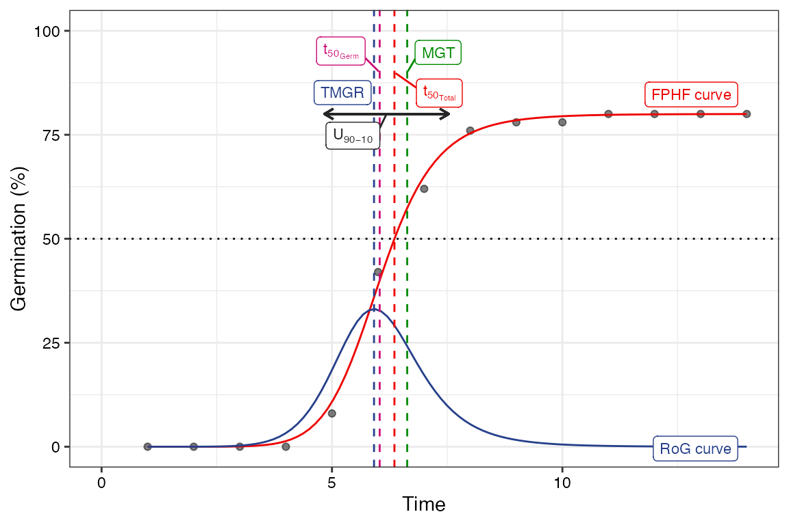
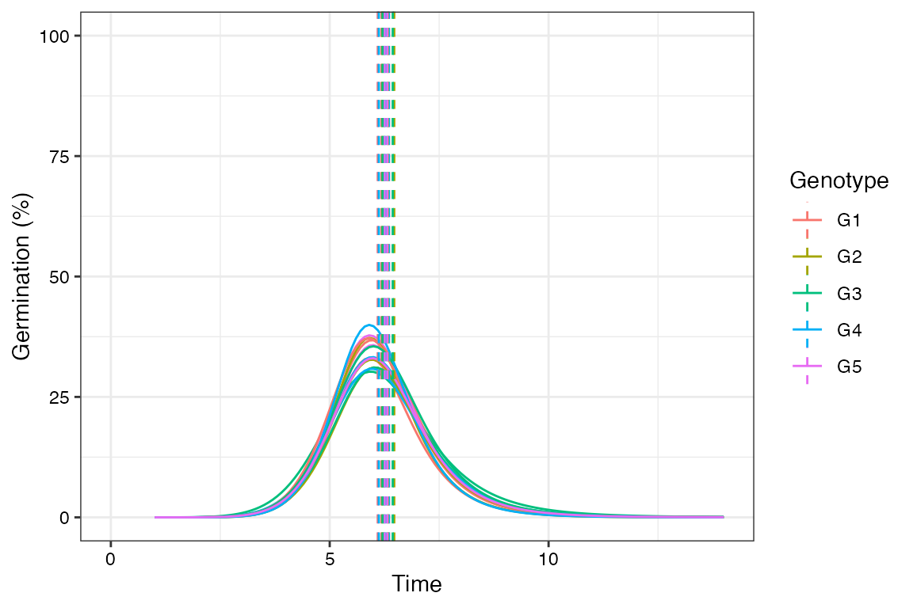
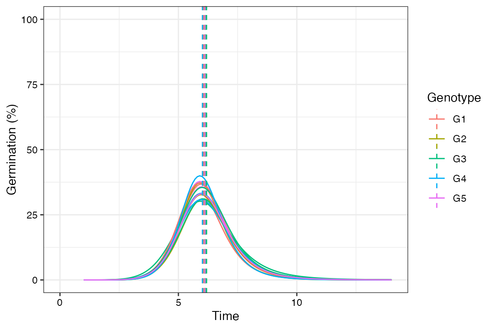
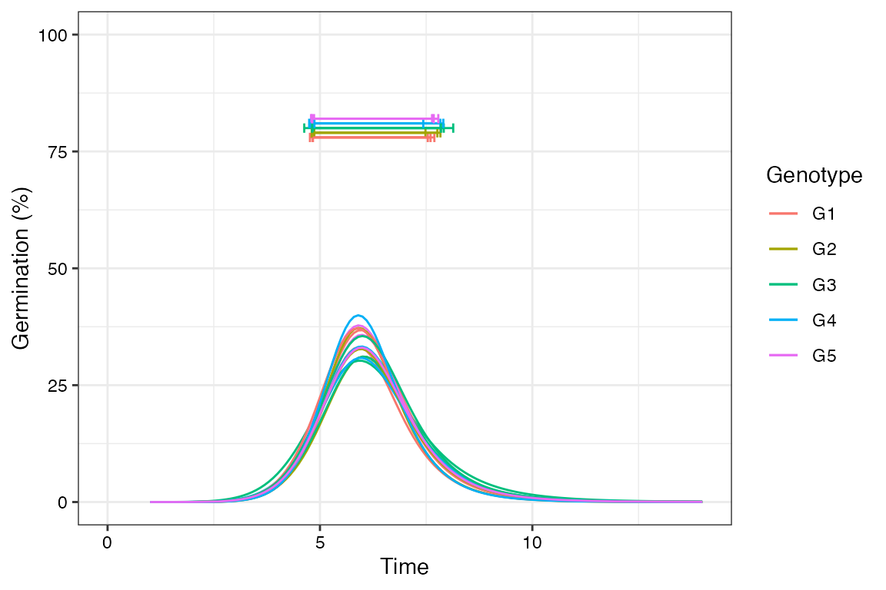

The germinationmetrics Package: A Brief Introduction
Aravind, J., Vimala Devi, S., Radhamani, J., Jacob, S. R., and Kalyani Srinivasan
2023-02-14
Source:vignettes/Introduction.Rmd
Introduction.RmdICAR-National Bureau of Plant Genetic Resources, New Delhi.

Overview
The package germinationmetrics is a collection of functions which implements various methods for describing the time-course of germination in terms of single-value germination indices as well as fitted curves.
The goal of this vignette is to introduce the users to these functions and get started in describing sequentially recorded germination count data. This document assumes a basic knowledge of R programming language.
Installation
The package can be installed using the following functions:
# Install from CRAN
install.packages('germinationmetrics', dependencies=TRUE)
# Install development version from Github
devtools::install_github("aravind-j/germinationmetrics")Then the package can be loaded using the function
--------------------------------------------------------------------------------
Welcome to germinationmetrics version 0.1.7
# To know how to use this package type:
browseVignettes(package = 'germinationmetrics')
for the package vignette.
# To know whats new in this version type:
news(package='germinationmetrics')
for the NEWS file.
# To cite the methods in the package type:
citation(package='germinationmetrics')
# To suppress this message use:
suppressPackageStartupMessages(library(germinationmetrics))
--------------------------------------------------------------------------------Version History
The current version of the package is 0.1.7. The previous versions are as follows.
Table 1. Version history of germinationmetrics R package.
| Version | Date |
|---|---|
| 0.1.0 | 2018-04-17 |
| 0.1.1 | 2018-07-26 |
| 0.1.1.1 | 2018-10-16 |
| 0.1.2 | 2018-10-31 |
| 0.1.3 | 2019-01-19 |
| 0.1.4 | 2020-06-16 |
| 0.1.5 | 2021-02-17 |
| 0.1.6 | 2022-06-15 |
To know detailed history of changes use news(package='germinationmetrics').
Germination count data
Typically in a germination test, the germination count data of a fixed number of seeds is recorded at regular intervals for a definite period of time or until all the seeds have germinated. These germination count data can be either partial or cumulative (Table 2).
Table 2 : A typical germination count data.
| intervals | counts | cumulative.counts |
|---|---|---|
| 1 | 0 | 0 |
| 2 | 0 | 0 |
| 3 | 0 | 0 |
| 4 | 0 | 0 |
| 5 | 4 | 4 |
| 6 | 17 | 21 |
| 7 | 10 | 31 |
| 8 | 7 | 38 |
| 9 | 1 | 39 |
| 10 | 0 | 39 |
| 11 | 1 | 40 |
| 12 | 0 | 40 |
| 13 | 0 | 40 |
| 14 | 0 | 40 |
The time-course of germination can be plotted as follows.
data <- data.frame(intervals = 1:14,
counts = c(0, 0, 0, 0, 4, 17, 10, 7, 1, 0, 1, 0, 0, 0))
# Partial germination counts
x <- data$counts
# Cumulative germination counts
y <- cumsum(x)
# Time intervals of observations
int <- data$intervals
plot(int, cumsum(x))
Single-value germination indices
The details about the single-value germination indices implemented in germinationmetrics are described in Table 3.
Table 3 : Single-value germination indices implemented in germinationmetrics.
| Germination index | Function | Details | Unit | Measures | Reference |
|---|---|---|---|---|---|
| Germination percentage or Final germination percentage or Germinability (\(GP\)) | GermPercent |
It is computed as follows. \[GP = \frac{N_{g}}{N_{t}} \times 100\] Where, \(N_{g}\) is the number of germinated seeds and \(N_{t}\) is the total number of seeds. |
Percentage (%) | Germination capacity | ISTA (2015) |
| Peak germination percentage (\(PGP\)) | PeakGermPercent |
It is computed as follows. \[PGP = \frac{N_{max}}{N_{t}} \times 100\] Where, \(N_{max}\) is the maximum number of seeds germinated per interval. |
Percentage (%) | Germination capacity | Vallance (1950); Roh et al. (2004) |
| Time for the first germination or Germination time lag (\(t_{0}\)) | FirstGermTime |
It is the time for first germination to occur (e.g. First day of germination). \[t_{0} = \min \left\{ T_{i} : N_{i} \neq 0 \right\}\] Where, \(T_{i}\) is the time from the start of the experiment to the \(i\)th interval and \(N_{i}\) is the number of seeds germinated in the \(i\)th time interval (not the accumulated number, but the number corresponding to the \(i\)th interval) |
time | Germination time | Edwards (1932); Czabator (1962); Goloff and Bazzaz (1975); Labouriau (1983a); Ranal (1999); Quintanilla et al. (2000) |
| Time for the last germination (\(t_{g}\)) | LastGermTime |
It is the time for last germination to occur (e.g. Last day of germination) \[t_{g} = \max \left\{ T_{i} : N_{i} \neq 0 \right\}\] Where, \(T_{i}\) is the time from the start of the experiment to the \(i\)th interval and \(N_{i}\) is the number of seeds germinated in the \(i\)th time interval (not the accumulated number, but the number corresponding to the \(i\)th interval) |
time | Germination time | Edwards (1932) |
| Time spread of germination or Germination distribution | TimeSpreadGerm |
It is the difference between time for last germination (\(t_{g}\)) and time for first germination (\(t_{0}\)). \[Time\,spread\,of\, germination = t_{g}-t_{0}\] |
time | Germination time | Al-Mudaris (1998); Schrader and Graves (2000); Kader (2005) |
| Peak period of germination or Modal time of germination (\(t_{peak}\)) | PeakGermTime |
It is the time in which highest frequency of germinated seeds are observed and need not be unique. \[t_{peak} = \left\{ T_{i} : N_{i} = N_{max} \right\}\] Where, \(T_{i}\) is the time from the start of the experiment to the \(i\)th interval, \(N_{i}\) is the number of seeds germinated in the \(i\)th time interval (not the accumulated number, but the number corresponding to the \(i\)th interval) and \(N_{max}\) is the maximum number of seeds germinated per interval. |
time | Germination time | Ranal and Santana (2006) |
| Median germination time (\(t_{50}\)) (Coolbear) | t50 |
It is the time to reach 50% of final/maximum germination. With argument method specified as "coolbear", it is computed as follows.\[t_{50}=T_{i}+\frac{(\frac{N+1}{2}-N_{i})(T_{j}-T_{i})}{N_{j}-N_{i}}\] Where, \(t_{50}\) is the median germination time, \(N\) is the final number of germinated seeds, and \(N_{i}\) and \(N_{j}\) are the total number of seeds germinated in adjacent counts at time \(T_{i}\) and \(T_{j}\) respectively, when \(N_{i} < \frac{N + 1}{2} < N_{j}\). |
time | Germination time | Coolbear et al. (1984) |
| Median germination time (\(t_{50}\)) (Farooq) | t50 |
With argument method specified as "farooq", it is computed as follows.\[t_{50}=T_{i}+\frac{(\frac{N}{2}-N_{i})(T_{j}-T_{i})}{N_{j}-N_{i}}\] Where, \(t_{50}\) is the median germination time, \(N\) is the final number of germinated seeds, and \(N_{i}\) and \(N_{j}\) are the total number of seeds germinated in adjacent counts at time \(T_{i}\) and \(T_{j}\) respectively, when \(N_{i} < \frac{N}{2} < N_{j}\). |
time | Germination time | Farooq et al. (2005) |
| Mean germination time or Mean length of incubation time (\(\overline{T}\)) or Germination resistance (\(GR\)) or Sprouting index (\(SI\)) or Emergence index (\(EI\)) | MeanGermTime |
It is the average length of time required for maximum germination of a seed lot and is estimated according to the following formula. \[\overline{T} = \frac{\sum_{i=1}^{k}N_{i}T_{i}}{\sum_{i=1}^{k}N_{i}}\] Where, \(T_{i}\) is the time from the start of the experiment to the \(i\)th interval, \(N_{i}\) is the number of seeds germinated in the \(i\)th time interval (not the accumulated number, but the number corresponding to the \(i\)th interval), and \(k\) is the total number of time intervals. It is the inverse of mean germination rate (\(\overline{V}\)). \[\overline{T} = \frac{1}{\overline{V}}\] |
time | Germination time | Edmond and Drapala (1958); Czabator (1962); Smith and Millet (1964); Gordon (1969); Gordon (1971); Mock and Eberhart (1972); Ellis and Roberts (1980) Labouriau (1983a); Ranal and Santana (2006) |
| Variance of germination time (\(s_{T}^{2}\)) | VarGermTime |
It is computed according to the following formula. \[s_{T}^{2} = \frac{\sum_{i=1}^{k}N_{i}(T_{i}-\overline{T})^{2}}{\sum_{i=1}^{k}N_{i}-1}\] Where, \(T_{i}\) is the time from the start of the experiment to the \(i\)th interval, \(N_{i}\) is the number of seeds germinated in the \(i\)th time interval (not the accumulated number, but the number corresponding to the \(i\)th interval), and \(k\) is the total number of time intervals. |
time-1 | Germination time | Labouriau (1983a); Ranal and Santana (2006) |
| Standard error of germination time (\(s_{\overline{T}}\)) | SEGermTime |
It signifies the accuracy of the calculation of the mean germination time. It is estimated according to the following formula: \[s_{\overline{T}} = \sqrt{\frac{s_{T}^{2}}{\sum_{i=1}^{k}N_{i}}}\] Where, \(N_{i}\) is the number of seeds germinated in the \(i\)th time interval (not the accumulated number, but the number corresponding to the \(i\)th interval) and \(k\) is the total number of time intervals. |
time | Germination time | Labouriau (1983a); Ranal and Santana (2006) |
| Mean germination rate (\(\overline{V}\)) | MeanGermRate |
It is computed according to the following formula: \[\overline{V} = \frac{\sum_{i=1}^{k}N_{i}}{\sum_{i=1}^{k}N_{i}T_{i}}\] Where, \(T_{i}\) is the time from the start of the experiment to the \(i\)th interval, \(N_{i}\) is the number of seeds germinated in the \(i\)th time interval (not the accumulated number, but the number corresponding to the \(i\)th interval), and \(k\) is the total number of time intervals. It is the inverse of mean germination time (\(\overline{T}\)). \[\overline{V} = \frac{1}{\overline{T}}\] |
time-1 | Germination rate | Labouriau and Valadares (1976); Labouriau (1983b); Ranal and Santana (2006) |
| Coefficient of velocity of germination (\(CVG\)) or Coefficient of rate of germination (\(CRG\)) or Kotowski’s coefficient of velocity | CVG |
It is estimated according to the following formula. \[CVG = \frac{\sum_{i=1}^{k}N_{i}}{\sum_{i=1}^{k}N_{i}T_{i}} \times 100\] \[CVG = \overline{V} \times 100\] Where, \(T_{i}\) is the time from the start of the experiment to the \(i\)th interval, \(N_{i}\) is the number of seeds germinated in the \(i\)th time interval (not the accumulated number, but the number corresponding to the \(i\)th interval), and \(k\) is the total number of time intervals. |
% time-1 | Germination rate | Kotowski (1926), Nichols and Heydecker (1968); Bewley and Black (1994); Labouriau (1983b); Scott et al. (1984) |
| Variance of germination rate (\(s_{V}^{2}\)) | VarGermRate |
It is calculated according to the following formula. \[s_{V}^{2} = \overline{V}^{4} \times s_{T}^{2}\] Where, \(s_{T}^{2}\) is the variance of germination time. |
time-2 | Germination rate | Labouriau (1983b); Ranal and Santana (2006) |
| Standard error of germination rate (\(s_{\overline{V}}\)) | SEGermRate |
It is estimated according to the following formula. \[s_{\overline{V}} = \sqrt{\frac{s_{V}^{2}}{\sum_{i=1}^{k}N_{i}}}\] Where, \(N_{i}\) is the number of seeds germinated in the \(i\)th time interval (not the accumulated number, but the number corresponding to the \(i\)th interval), and \(k\) is the total number of time intervals. |
time-1 | Germination rate | Labouriau (1983b); Ranal and Santana (2006) |
| Germination rate as the reciprocal of the median time (\(v_{50}\)) | GermRateRecip |
It is the reciprocal of the median germination time (\(t_{50}\)). \[v_{50} = \frac{1}{t_{50}}\] |
time-1 | Germination rate | Went (1957); Labouriau (1983b); Ranal and Santana (2006) |
| Speed of germination or Germination rate Index or index of velocity of germination or Emergence rate index (Allan, Vogel and Peterson; Erbach; Hsu and Nelson) or Germination index (AOSA) | GermSpeed |
It is the rate of germination in terms of the total number of seeds that germinate in a time interval. It is estimated as follows. \[S = \sum_{i=1}^{k}\frac{N_{i}}{T_{i}}\] Where, \(T_{i}\) is the time from the start of the experiment to the \(i\)th interval, \(N_{i}\) is the number of seeds germinated in the \(i\)th time interval (not the accumulated number, but the number corresponding to the \(i\)th interval), and \(k\) is the total number of time intervals. Instead of germination counts, germination percentages may also be used for computation of speed of germination. |
% time-1 or count time-1 | Mixed | Throneberry and Smith (1955); Maguire (1962); Allan et al. (1962); Kendrick and Frankland (1969); Bouton et al. (1976); Erbach (1982); AOSA (1983); Khandakar and Bradbeer (1983); Hsu and Nelson (1986); Bradbeer (1988); Wardle et al. (1991) |
| Speed of accumulated germination | GermSpeedAccumulated |
It is the rate of germination in terms of the accumulated/cumulative total number of seeds that germinate in a time interval. It is estimated as follows. \[S_{accumulated} = \sum_{i=1}^{k}\frac{\sum_{j=1}^{i}N_{j}}{T_{i}}\] Where, \(T_{i}\) is the time from the start of the experiment to the \(i\)th interval, \(\sum_{j=1}^{i}N_{j}\) is the cumuative/accumulated number of seeds germinated in the \(i\)th interval, and \(k\) is the total number of time intervals. Instead of germination counts, germination percentages may also be used for computation of speed of germination. |
% time-1 or count time-1 | Mixed | Bradbeer (1988); Wardle et al. (1991); Haugland and Brandsaeter (1996); Santana and Ranal (2004) |
| Corrected germination rate index | GermSpeedCorrected |
It is computed as follows. \[S_{corrected} = \frac{S}{FGP}\] Where, \(S\) is the germination speed computed with germination percentage instead of counts and \(FGP\) is the final germination percentage or germinability. |
time-1 | Mixed | Evetts and Burnside (1972) |
| Weighted germination percentage (\(WGP\)) | WeightGermPercent |
It is estimated as follows. \[WGP = \frac{\sum_{i=1}^{k}(k-i+1)N_{i}}{k \times N} \times 100\] Where, \(N_{i}\) is the number of seeds that germinated in the time interval \(i\) (not cumulative, but partial count), \(N\) is the total number of seeds tested, and \(k\) is the total number of time intervals. |
Percentage (%) | Mixed | Reddy et al. (1985); Reddy (1978) |
| Mean germination percentage per unit time (\(\overline{GP}\)) | MeanGermPercent |
It is estimated as follows. \[\overline{GP} = \frac{GP}{T_{k}}\] Where, \(GP\) is the final germination percentage, \(T_{k}\) is the time at the \(k\)th time interval, and \(k\) is the total number of time intervals required for final germination. |
% time-1 | Mixed | Czabator (1962) |
| Number of seeds germinated per unit time \(\overline{N}\) | MeanGermNumber |
It is estimated as follows. \[\overline{N} = \frac{N_{g}}{T_{k}}\] Where, \(N_{g}\) is the number of germinated seeds at the end of the germination test, \(T_{k}\) is the time at the \(k\)th time interval, and \(k\) is the total number of time intervals required for final germination. |
count time-1 | Mixed | Khamassi et al. (2013) |
| Timson’s index [\(\sum 10\) (Ten summation), \(\sum 5\) or \(\sum 20\)] or Germination energy index (\(GEI\)) | TimsonsIndex |
It is the progressive total of cumulative germination percentage recorded at specific intervals for a set period of time and is estimated in terms of cumulative germination percentage (\(G_{i}\)) as follows. \[\Sigma k = \sum_{i=1}^{k}G_{i}\] Where, \(G_{i}\) is the cumulative germination percentage in time interval \(i\), and \(k\) is the total number of time intervals. It also estimated in terms of partial germination percentage as follows. \[\Sigma k = \sum_{i=1}^{k}g_{i}(k-j)\] Where, \(g_{i}\) is the germination (not cumulative, but partial germination) in time interval \(i\) (\(i\) varying from \(0\) to \(k\)), \(k\) is the total number of time intervals, and \(j = i - 1\). |
Percentage (%) | Mixed | Grose and Zimmer (1958); Timson (1965); Lyon and Coffelt (1966); Chaudhary and Ghildyal (1970); Negm and Smith (1978); Brown and Mayer (1988); Baskin and Baskin (1998); Goodchild and Walker (1971) |
| Modified Timson’s index (\(\Sigma k_{mod}\)) (Labouriau) | TimsonsIndex |
It is estimated as Timson’s index \(\Sigma k\) divided by the sum of partial germination percentages. \[\Sigma k_{mod} = \frac{\Sigma k}{\sum_{i=1}^{k}g_{i}}\] |
no unit | Mixed | Ranal and Santana (2006) |
| Modified Timson’s index (\(\Sigma k_{mod}\)) (Khan and Unger) | TimsonsIndex |
It is estimated as Timson’s index (\(\Sigma k\)) divided by the total time period of germination (\(T_{k}\)). \[\Sigma k_{mod} = \frac{\Sigma k}{T_{k}}\] |
% time-1 | Mixed | Khan and Ungar (1984) |
| George’s index (\(GR\)) | GermRateGeorge |
It is estimated as follows. \[GR = \sum_{i=1}^{k}N_{i}K_{i}\] Where \(N_{i}\) is the number of seeds germinated by \(i\)th interval and \(K_{i}\) is the number of intervals(eg. days) until the end of the test, and and \(k\) is the total number of time intervals. |
count time | Mixed | George (1961); Tucker and Wright (1965); Nichols and Heydecker (1968) |
| Germination Index (\(GI\)) (Melville) | GermIndex |
It is estimated as follows. \[GI = \sum_{i=1}^{k}\frac{\left | \left ( T_{k} - T_{i} \right ) N_{i}\right |}{N_{t}}\] Where, \(T_{i}\) is the time from the start of the experiment to the \(i\)th interval (day for the example), \(N_{i}\) is the number of seeds germinated in the \(i\)th time interval (not the accumulated number, but the number corresponding to the \(i\)th interval), \(N_{t}\) is the total number of seeds used in the test, and \(k\) is the total number of time intervals. |
time | Mixed | Melville et al. (1980) |
| Germination Index (\(GI_{mod}\)) (Melville; Santana and Ranal) | GermIndex |
It is estimated as follows. \[GI_{mod} = \sum_{i=1}^{k}\frac{\left | \left ( T_{k} - T_{i} \right ) N_{i}\right |}{N_{g}}\] Where, \(T_{i}\) is the time from the start of the experiment to the \(i\)th interval (day for the example), \(N_{i}\) is the number of seeds germinated in the \(i\)th time interval (not the accumulated number, but the number corresponding to the \(i\)th interval), \(N_{g}\) is the total number of germinated seeds at the end of the test, and \(k\) is the total number of time intervals. |
time | Mixed | Melville et al. (1980); Santana and Ranal (2004); Ranal and Santana (2006) |
| Emergence Rate Index (\(ERI\)) or Germination Rate Index (Shmueli and Goldberg) | EmergenceRateIndex |
It is estimated as follows. \[ERI = \sum_{i=i_{0}}^{k-1}N_{i}(k-i)\] Where, \(N_{i}\) is the number of seeds germinated in the \(i\)th time interval (not the accumulated number, but the number corresponding to the \(i\)th interval), \(i_{0}\) is the time interval when emergence/germination started, and \(k\) is the total number of time intervals. |
count | Mixed | Shmueli and Goldberg (1971) |
| Modified Emergence Rate Index (\(ERI_{mod}\)) or Modified Germination Rate Index (Shmueli and Goldberg; Santana and Ranal) | EmergenceRateIndex |
It is estimated by dividing Emergence rate index (\(ERI\)) by total number of emerged seedlings (or germinated seeds). \[ERI_{mod} = \frac{\sum_{i=i_{0}}^{k-1}N_{i}(k-i)}{N_{g}} = \frac{ERI}{N_{g}}\] Where, \(N_{g}\) is the total number of germinated seeds at the end of the test, \(N_{i}\) is the number of seeds germinated in the \(i\)th time interval (not the accumulated number, but the number corresponding to the \(i\)th interval), \(i_{0}\) is the time interval when emergence/germination started, and \(k\) is the total number of time intervals. |
no unit | Mixed | Shmueli and Goldberg (1971); Santana and Ranal (2004); Ranal and Santana (2006) |
| Emergence Rate Index (\(ERI\)) or Germination Rate Index (Bilbro & Wanjura) | EmergenceRateIndex |
It is the estimated as follows. \[ERI = \frac{\sum_{i=1}^{k}N_{i}}{\overline{T}} = \frac{N_{g}}{\overline{T}}\] Where, \(N_{g}\) is the total number of germinated seeds at the end of the test, \(N_{i}\) is the number of seeds germinated in the \(i\)th time interval (not the accumulated number, but the number corresponding to the \(i\)th interval), and \(\overline{T}\) is the mean germination time or mean emergence time. |
count time-1 | Mixed | Bilbro and Wanjura (1982) |
| Emergence Rate Index (\(ERI\)) or Germination Rate Index (Fakorede) | EmergenceRateIndex |
It is estimated as follows. \[ERI = \frac{\overline{T}}{FGP/100}\] Where, \(\overline{T}\) is the Mean germination time and \(FGP\) is the final germination time. |
time count-1 | Mixed | Fakorede and Ayoola (1980); Fakorede and Ojo (1981); Fakorede and Agbana (1983) |
| Peak value(\(PV\)) (Czabator) or Emergence Energy (\(EE\)) | PeakValue |
It is the accumulated number of seeds germinated at the point on the germination curve at which the rate of germination starts to decrease. It is computed as the maximum quotient obtained by dividing successive cumulative germination values by the relevant incubation time. \[PV = \max\left ( \frac{G_{1}}{T_{1}},\frac{G_{2}}{T_{2}},\cdots \frac{G_{k}}{T_{k}} \right )\] Where, \(T_{i}\) is the time from the start of the experiment to the \(i\)th interval, \(G_{i}\) is the cumulative germination percentage in the \(i\)th time interval, and \(k\) is the total number of time intervals. |
% time-1 | Mixed | Czabator (1962); Bonner (1967) |
| Germination value (\(GV\)) (Czabator) | GermValue |
It is computed as follows. \[GV = PV \times MDG\] Where, \(PV\) is the peak value and \(MDG\) is the mean daily germination percentage from the onset of germination. It can also be computed for other time intervals of successive germination counts, by replacing \(MDG\) with the mean germination percentage per unit time (\(\overline{GP}\)). \(GV\) value can be modified (\(GV_{mod}\)), to consider the entire duration from the beginning of the test instead of just from the onset of germination. |
%2 time-2 | Mixed | Czabator (1962); Brown and Mayer (1988) |
| Germination value (\(GV\)) (Diavanshir and Pourbiek) | GermValue |
It is computed as follows. \[GV = \frac{\sum DGS}{N} \times GP \times c\] Where, \(DGS\) is the daily germination speed computed by dividing cumulative germination percentage by the number of days since the since the onset of germination, \(N\) is the frequency or number of DGS calculated during the test, \(GP\) is the germination percentage expressed over 100, and \(c\) is a constant. The value of \(c\) is decided on the basis of average daily speed of germination (\(\frac{\sum DGS}{N}\)). If it is less than 10, then \(c\) value of 10 can be used and if it is more than 10, then value of 7 or 8 can be used for \(c\). \(GV\) value can be modified (\(GV_{mod}\)), to consider the entire duration from the beginning of the test instead of just from the onset of germination. |
%2 time-1 | Mixed | Djavanshir and Pourbeik (1976); Brown and Mayer (1988) |
| Coefficient of uniformity of germination (\(CUG\)) | CUGerm |
It is computed as follows. \[CUG = \frac{\sum_{i=1}^{k}N_{i}}{\sum_{i=1}^{k}(\overline{T}-T_{i})^{2}N_{i}}\] Where, \(\overline{T}\) is the the mean germination time, \(T_{i}\) is the time from the start of the experiment to the \(i\)th interval (day for the example), \(N_{i}\) is the number of seeds germinated in the \(i\)th time interval (not the accumulated number, but the number corresponding to the \(i\)th interval), and \(k\) is the total number of time intervals. |
time-2 | Germination unifromity | Heydecker (1972); Bewley and Black (1994) |
| Coefficient of variation of the germination time (\(CV_{T}\)) | CVGermTime |
It is estimated as follows. \[CV_{T} = \sqrt{\frac{s_{T}^{2}}{\overline{T}}}\] Where, \(s_{T}^{2}\) is the variance of germination time and \(\overline{T}\) is the mean germination time. |
no unit | Germination unifromity | Gomes (1960); Ranal and Santana (2006) |
| Synchronization index (\(\overline{E}\)) or Uncertainty of the germination process (\(U\)) or informational entropy (\(H\)) | GermUncertainty |
It is estimated as follows. \[\overline{E} = -\sum_{i=1}^{k}f_{i}\log_{2}f_{i}\] Where, \(f_{i}\) is the relative frequency of germination (\(f_{i}=\frac{N_{i}}{\sum_{i=1}^{k}N_{i}}\)), \(N_{i}\) is the number of seeds germinated on the \(i\)th time interval, and \(k\) is the total number of time intervals. |
bit | Germination synchrony | Shannon (1948); Labouriau and Valadares (1976); Labouriau (1983b) |
| Synchrony of germination (\(Z\) index) | GermSynchrony |
It is computed as follows. \[Z=\frac{\sum_{i=1}^{k}C_{N_{i},2}}{C_{\Sigma N_{i},2}}\] Where, \(C_{N_{i},2}\) is the partial combination of the two germinated seeds from among \(N_{i}\), the number of seeds germinated on the \(i\)th time interval (estimated as \(C_{N_{i},2}=\frac{N_{i}(N_{i}-1)}{2}\)), and \(C_{\Sigma N_{i},2}\) is the partial combination of the two germinated seeds from among the total number of seeds germinated at the final count, assuming that all seeds that germinated did so simultaneously. |
no unit | Germination synchrony | Primack (1985); Ranal and Santana (2006) |
GermPercent()
x <- c(0, 0, 0, 0, 4, 17, 10, 7, 1, 0, 1, 0, 0, 0)
y <- c(0, 0, 0, 0, 4, 21, 31, 38, 39, 39, 40, 40, 40, 40)
z <- c(0, 0, 0, 0, 11, 11, 9, 7, 1, 0, 1, 0, 0, 0)
int <- 1:length(x)
# From partial germination counts
#----------------------------------------------------------------------------
GermPercent(germ.counts = x, total.seeds = 50)[1] 80
PeakGermPercent(germ.counts = x, intervals = int, total.seeds = 50)[1] 34
# For multiple peak germination times
PeakGermPercent(germ.counts = z, intervals = int, total.seeds = 50)Warning in PeakGermPercent(germ.counts = z, intervals = int, total.seeds = 50):
Multiple peak germination times exist.[1] 22
# From cumulative germination counts
#----------------------------------------------------------------------------
GermPercent(germ.counts = y, total.seeds = 50, partial = FALSE)[1] 80
PeakGermPercent(germ.counts = y, intervals = int, total.seeds = 50,
partial = FALSE)[1] 34
# For multiple peak germination times
PeakGermPercent(germ.counts = cumsum(z), intervals = int, total.seeds = 50,
partial = FALSE)Warning in PeakGermPercent(germ.counts = cumsum(z), intervals = int,
total.seeds = 50, : Multiple peak germination times exist.[1] 22
# From number of germinated seeds
#----------------------------------------------------------------------------
GermPercent(germinated.seeds = 40, total.seeds = 50)[1] 80
FirstGermTime(), LastGermTime(), PeakGermTime(), TimeSpreadGerm()
x <- c(0, 0, 0, 0, 4, 17, 10, 7, 1, 0, 1, 0, 0, 0)
y <- c(0, 0, 0, 0, 4, 21, 31, 38, 39, 39, 40, 40, 40, 40)
z <- c(0, 0, 0, 0, 11, 11, 9, 7, 1, 0, 1, 0, 0, 0)
int <- 1:length(x)
# From partial germination counts
#----------------------------------------------------------------------------
FirstGermTime(germ.counts = x, intervals = int)[1] 5
LastGermTime(germ.counts = x, intervals = int)[1] 11
TimeSpreadGerm(germ.counts = x, intervals = int)[1] 6
PeakGermTime(germ.counts = x, intervals = int)[1] 6
# For multiple peak germination times
PeakGermTime(germ.counts = z, intervals = int)Warning in PeakGermTime(germ.counts = z, intervals = int): Multiple peak
germination times exist.[1] 5 6
# From cumulative germination counts
#----------------------------------------------------------------------------
FirstGermTime(germ.counts = y, intervals = int, partial = FALSE)[1] 5
LastGermTime(germ.counts = y, intervals = int, partial = FALSE)[1] 11
TimeSpreadGerm(germ.counts = y, intervals = int, partial = FALSE)[1] 6
PeakGermTime(germ.counts = y, intervals = int, partial = FALSE)[1] 6
# For multiple peak germination time
PeakGermTime(germ.counts = cumsum(z), intervals = int, partial = FALSE)Warning in PeakGermTime(germ.counts = cumsum(z), intervals = int, partial =
FALSE): Multiple peak germination times exist.[1] 5 6
t50()
x <- c(0, 0, 0, 0, 4, 17, 10, 7, 1, 0, 1, 0, 0, 0)
y <- c(0, 0, 0, 0, 4, 21, 31, 38, 39, 39, 40, 40, 40, 40)
int <- 1:length(x)
# From partial germination counts
#----------------------------------------------------------------------------
t50(germ.counts = x, intervals = int, method = "coolbear")[1] 5.970588
t50(germ.counts = x, intervals = int, method = "farooq")[1] 5.941176
# From cumulative germination counts
#----------------------------------------------------------------------------
t50(germ.counts = y, intervals = int, partial = FALSE, method = "coolbear")[1] 5.970588
t50(germ.counts = y, intervals = int, partial = FALSE, method = "farooq")[1] 5.941176
MeanGermTime(), VarGermTime(), SEGermTime(), CVGermTime()
x <- c(0, 0, 0, 0, 4, 17, 10, 7, 1, 0, 1, 0, 0, 0)
y <- c(0, 0, 0, 0, 4, 21, 31, 38, 39, 39, 40, 40, 40, 40)
int <- 1:length(x)
# From partial germination counts
#----------------------------------------------------------------------------
MeanGermTime(germ.counts = x, intervals = int)[1] 6.7
VarGermTime(germ.counts = x, intervals = int)[1] 1.446154
SEGermTime(germ.counts = x, intervals = int)[1] 0.1901416
CVGermTime(germ.counts = x, intervals = int)[1] 0.1794868
# From cumulative germination counts
#----------------------------------------------------------------------------
MeanGermTime(germ.counts = y, intervals = int, partial = FALSE)[1] 6.7
VarGermTime(germ.counts = y, intervals = int, partial = FALSE)[1] 19.04012
SEGermTime(germ.counts = y, intervals = int, partial = FALSE)[1] 0.2394781
CVGermTime(germ.counts = y, intervals = int, partial = FALSE)[1] 0.6512685
MeanGermRate(), CVG(), VarGermRate(), SEGermRate(), GermRateRecip()
x <- c(0, 0, 0, 0, 4, 17, 10, 7, 1, 0, 1, 0, 0, 0)
y <- c(0, 0, 0, 0, 4, 21, 31, 38, 39, 39, 40, 40, 40, 40)
int <- 1:length(x)
# From partial germination counts
#----------------------------------------------------------------------------
MeanGermRate(germ.counts = x, intervals = int)[1] 0.1492537
CVG(germ.counts = x, intervals = int)[1] 14.92537
VarGermRate(germ.counts = x, intervals = int)[1] 0.0007176543
SEGermRate(germ.counts = x, intervals = int)[1] 0.004235724
GermRateRecip(germ.counts = x, intervals = int, method = "coolbear")[1] 0.1674877
GermRateRecip(germ.counts = x, intervals = int, method = "farooq")[1] 0.1683168
# From cumulative germination counts
#----------------------------------------------------------------------------
MeanGermRate(germ.counts = y, intervals = int, partial = FALSE)[1] 0.1492537
CVG(germ.counts = y, intervals = int, partial = FALSE)[1] 14.92537
VarGermRate(germ.counts = y, intervals = int, partial = FALSE)[1] 0.009448666
SEGermRate(germ.counts = y, intervals = int, partial = FALSE)[1] 0.005334776
GermRateRecip(germ.counts = y, intervals = int,
method = "coolbear", partial = FALSE)[1] 0.1674877
GermRateRecip(germ.counts = y, intervals = int,
method = "farooq", partial = FALSE)[1] 0.1683168
GermSpeed(), GermSpeedAccumulated(), GermSpeedCorrected()
x <- c(0, 0, 0, 0, 4, 17, 10, 7, 1, 0, 1, 0, 0, 0)
y <- c(0, 0, 0, 0, 4, 21, 31, 38, 39, 39, 40, 40, 40, 40)
int <- 1:length(x)
# From partial germination counts
#----------------------------------------------------------------------------
GermSpeed(germ.counts = x, intervals = int)[1] 6.138925
GermSpeedAccumulated(germ.counts = x, intervals = int)[1] 34.61567
GermSpeedCorrected(germ.counts = x, intervals = int, total.seeds = 50,
method = "normal")[1] 0.1534731
GermSpeedCorrected(germ.counts = x, intervals = int, total.seeds = 50,
method = "accumulated")[1] 0.8653917
# From partial germination counts (with percentages instead of counts)
#----------------------------------------------------------------------------
GermSpeed(germ.counts = x, intervals = int,
percent = TRUE, total.seeds = 50)[1] 12.27785
GermSpeedAccumulated(germ.counts = x, intervals = int,
percent = TRUE, total.seeds = 50)[1] 69.23134
# From cumulative germination counts
#----------------------------------------------------------------------------
GermSpeed(germ.counts = y, intervals = int, partial = FALSE)[1] 6.138925
GermSpeedAccumulated(germ.counts = y, intervals = int, partial = FALSE)[1] 34.61567
GermSpeedCorrected(germ.counts = y, intervals = int,
partial = FALSE, total.seeds = 50, method = "normal")[1] 0.1534731
GermSpeedCorrected(germ.counts = y, intervals = int,
partial = FALSE, total.seeds = 50, method = "accumulated")[1] 0.8653917
# From cumulative germination counts (with percentages instead of counts)
#----------------------------------------------------------------------------
GermSpeed(germ.counts = y, intervals = int, partial = FALSE,
percent = TRUE, total.seeds = 50)[1] 12.27785
GermSpeedAccumulated(germ.counts = y, intervals = int, partial = FALSE,
percent = TRUE, total.seeds = 50)[1] 69.23134
WeightGermPercent()
x <- c(0, 0, 0, 0, 4, 17, 10, 7, 1, 0, 1, 0, 0, 0)
y <- c(0, 0, 0, 0, 4, 21, 31, 38, 39, 39, 40, 40, 40, 40)
int <- 1:length(x)
# From partial germination counts
#----------------------------------------------------------------------------
WeightGermPercent(germ.counts = x, total.seeds = 50, intervals = int)[1] 47.42857
# From cumulative germination counts
#----------------------------------------------------------------------------
WeightGermPercent(germ.counts = y, total.seeds = 50, intervals = int,
partial = FALSE)[1] 47.42857
MeanGermPercent(), MeanGermNumber()
x <- c(0, 0, 0, 0, 4, 17, 10, 7, 1, 0, 1, 0, 0, 0)
y <- c(0, 0, 0, 0, 4, 21, 31, 38, 39, 39, 40, 40, 40, 40)
int <- 1:length(x)
# From partial germination counts
#----------------------------------------------------------------------------
MeanGermPercent(germ.counts = x, total.seeds = 50, intervals = int)[1] 5.714286
MeanGermNumber(germ.counts = x, intervals = int)[1] 2.857143
# From cumulative germination counts
#----------------------------------------------------------------------------
MeanGermPercent(germ.counts = y, total.seeds = 50, intervals = int, partial = FALSE)[1] 5.714286
MeanGermNumber(germ.counts = y, intervals = int, partial = FALSE)[1] 2.857143
# From number of germinated seeds
#----------------------------------------------------------------------------
MeanGermPercent(germinated.seeds = 40, total.seeds = 50, intervals = int)[1] 5.714286
TimsonsIndex(), GermRateGeorge()
x <- c(0, 0, 0, 0, 4, 17, 10, 7, 1, 0, 1, 0, 0, 0)
y <- c(0, 0, 0, 0, 4, 21, 31, 38, 39, 39, 40, 40, 40, 40)
int <- 1:length(x)
# From partial germination counts
#----------------------------------------------------------------------------
# Wihout max specified
TimsonsIndex(germ.counts = x, intervals = int, total.seeds = 50)[1] 664
TimsonsIndex(germ.counts = x, intervals = int, total.seeds = 50,
modification = "none")[1] 664
TimsonsIndex(germ.counts = x, intervals = int, total.seeds = 50,
modification = "labouriau")[1] 8.3
TimsonsIndex(germ.counts = x, intervals = int, total.seeds = 50,
modification = "khanungar")[1] 47.42857
GermRateGeorge(germ.counts = x, intervals = int)[1] 332
# With max specified
TimsonsIndex(germ.counts = x, intervals = int, total.seeds = 50, max = 10)[1] 344
TimsonsIndex(germ.counts = x, intervals = int, total.seeds = 50,
max = 10, modification = "none")[1] 344
TimsonsIndex(germ.counts = x, intervals = int, total.seeds = 50,
max = 10, modification = "labouriau")[1] 4.410256
TimsonsIndex(germ.counts = x, intervals = int, total.seeds = 50,
max = 10, modification = "khanungar")[1] 24.57143
GermRateGeorge(germ.counts = x, intervals = int, max = 10)[1] 172
GermRateGeorge(germ.counts = x, intervals = int, max = 14)[1] 332
# From cumulative germination counts
#----------------------------------------------------------------------------
# Wihout max specified
TimsonsIndex(germ.counts = y, intervals = int, partial = FALSE,
total.seeds = 50)[1] 664
TimsonsIndex(germ.counts = y, intervals = int, partial = FALSE,
total.seeds = 50,
modification = "none")[1] 664
TimsonsIndex(germ.counts = y, intervals = int, partial = FALSE,
total.seeds = 50,
modification = "labouriau")[1] 8.3
TimsonsIndex(germ.counts = y, intervals = int, partial = FALSE,
total.seeds = 50,
modification = "khanungar")[1] 47.42857
GermRateGeorge(germ.counts = y, intervals = int, partial = FALSE,)[1] 332
# With max specified
TimsonsIndex(germ.counts = y, intervals = int, partial = FALSE,
total.seeds = 50, max = 10)[1] 344
TimsonsIndex(germ.counts = y, intervals = int, partial = FALSE,
total.seeds = 50,
max = 10, modification = "none")[1] 344
TimsonsIndex(germ.counts = y, intervals = int, partial = FALSE,
total.seeds = 50,
max = 10, modification = "labouriau")[1] 4.410256
TimsonsIndex(germ.counts = y, intervals = int, partial = FALSE,
total.seeds = 50,
max = 10, modification = "khanungar")[1] 24.57143
GermRateGeorge(germ.counts = y, intervals = int, partial = FALSE,
max = 10)[1] 172
GermRateGeorge(germ.counts = y, intervals = int, partial = FALSE,
max = 14)[1] 332
GermIndex()
x <- c(0, 0, 0, 0, 4, 17, 10, 7, 1, 0, 1, 0, 0, 0)
y <- c(0, 0, 0, 0, 4, 21, 31, 38, 39, 39, 40, 40, 40, 40)
int <- 1:length(x)
# From partial germination counts
#----------------------------------------------------------------------------
GermIndex(germ.counts = x, intervals = int, total.seeds = 50)[1] 5.84
GermIndex(germ.counts = x, intervals = int, total.seeds = 50,
modification = "none")[1] 5.84
GermIndex(germ.counts = x, intervals = int, total.seeds = 50,
modification = "santanaranal")[1] 7.3
# From cumulative germination counts
#----------------------------------------------------------------------------
GermIndex(germ.counts = y, intervals = int, partial = FALSE,
total.seeds = 50)[1] 5.84
GermIndex(germ.counts = y, intervals = int, partial = FALSE,
total.seeds = 50,
modification = "none")[1] 5.84
GermIndex(germ.counts = y, intervals = int, partial = FALSE,
total.seeds = 50,
modification = "santanaranal")[1] 7.3
EmergenceRateIndex()
x <- c(0, 0, 0, 0, 4, 17, 10, 7, 1, 0, 1, 0, 0, 0)
y <- c(0, 0, 0, 0, 4, 21, 31, 38, 39, 39, 40, 40, 40, 40)
int <- 1:length(x)
# From partial germination counts
#----------------------------------------------------------------------------
EmergenceRateIndex(germ.counts = x, intervals = int)[1] 292
EmergenceRateIndex(germ.counts = x, intervals = int,
method = "shmueligoldberg")[1] 292
EmergenceRateIndex(germ.counts = x, intervals = int,
method = "sgsantanaranal")[1] 7.3
EmergenceRateIndex(germ.counts = x, intervals = int,
method = "bilbrowanjura")[1] 5.970149
EmergenceRateIndex(germ.counts = x, intervals = int,
total.seeds = 50, method = "fakorede")[1] 8.375
# From cumulative germination counts
#----------------------------------------------------------------------------
EmergenceRateIndex(germ.counts = y, intervals = int, partial = FALSE,)[1] 292
EmergenceRateIndex(germ.counts = y, intervals = int, partial = FALSE,
method = "shmueligoldberg")[1] 292
EmergenceRateIndex(germ.counts = y, intervals = int, partial = FALSE,
method = "sgsantanaranal")[1] 7.3
EmergenceRateIndex(germ.counts = y, intervals = int, partial = FALSE,
method = "bilbrowanjura")[1] 5.970149
EmergenceRateIndex(germ.counts = y, intervals = int, partial = FALSE,
total.seeds = 50, method = "fakorede")[1] 8.375
PeakValue(), GermValue()
x <- c(0, 0, 34, 40, 21, 10, 4, 5, 3, 5, 8, 7, 7, 6, 6, 4, 0, 2, 0, 2)
y <- c(0, 0, 34, 74, 95, 105, 109, 114, 117, 122, 130, 137, 144, 150,
156, 160, 160, 162, 162, 164)
int <- 1:length(x)
total.seeds = 200
# From partial germination counts
#----------------------------------------------------------------------------
PeakValue(germ.counts = x, intervals = int, total.seeds = 200)[1] 9.5
GermValue(germ.counts = x, intervals = int, total.seeds = 200,
method = "czabator")$`Germination Value`
[1] 38.95
[[2]]
germ.counts intervals Cumulative.germ.counts Cumulative.germ.percent
3 34 3 34 17.0
4 40 4 74 37.0
5 21 5 95 47.5
6 10 6 105 52.5
7 4 7 109 54.5
8 5 8 114 57.0
9 3 9 117 58.5
10 5 10 122 61.0
11 8 11 130 65.0
12 7 12 137 68.5
13 7 13 144 72.0
14 6 14 150 75.0
15 6 15 156 78.0
16 4 16 160 80.0
17 0 17 160 80.0
18 2 18 162 81.0
19 0 19 162 81.0
20 2 20 164 82.0
DGS
3 5.666667
4 9.250000
5 9.500000
6 8.750000
7 7.785714
8 7.125000
9 6.500000
10 6.100000
11 5.909091
12 5.708333
13 5.538462
14 5.357143
15 5.200000
16 5.000000
17 4.705882
18 4.500000
19 4.263158
20 4.100000
GermValue(germ.counts = x, intervals = int, total.seeds = 200,
method = "dp", k = 10)$`Germination Value`
[1] 53.36595
[[2]]
germ.counts intervals Cumulative.germ.counts Cumulative.germ.percent
3 34 3 34 17.0
4 40 4 74 37.0
5 21 5 95 47.5
6 10 6 105 52.5
7 4 7 109 54.5
8 5 8 114 57.0
9 3 9 117 58.5
10 5 10 122 61.0
11 8 11 130 65.0
12 7 12 137 68.5
13 7 13 144 72.0
14 6 14 150 75.0
15 6 15 156 78.0
16 4 16 160 80.0
17 0 17 160 80.0
18 2 18 162 81.0
19 0 19 162 81.0
20 2 20 164 82.0
DGS SumDGSbyN GV
3 5.666667 5.666667 9.633333
4 9.250000 7.458333 27.595833
5 9.500000 8.138889 38.659722
6 8.750000 8.291667 43.531250
7 7.785714 8.190476 44.638095
8 7.125000 8.012897 45.673512
9 6.500000 7.796769 45.611097
10 6.100000 7.584673 46.266503
11 5.909091 7.398497 48.090230
12 5.708333 7.229481 49.521942
13 5.538462 7.075752 50.945411
14 5.357143 6.932534 51.994006
15 5.200000 6.799262 53.034246
16 5.000000 6.670744 53.365948
17 4.705882 6.539753 52.318022
18 4.500000 6.412268 51.939373
19 4.263158 6.285850 50.915385
20 4.100000 6.164414 50.548194
$testend
[1] 16
GermValue(germ.counts = x, intervals = int, total.seeds = 200,
method = "czabator", from.onset = FALSE)$`Germination Value`
[1] 38.95
[[2]]
germ.counts intervals Cumulative.germ.counts Cumulative.germ.percent
1 0 1 0 0.0
2 0 2 0 0.0
3 34 3 34 17.0
4 40 4 74 37.0
5 21 5 95 47.5
6 10 6 105 52.5
7 4 7 109 54.5
8 5 8 114 57.0
9 3 9 117 58.5
10 5 10 122 61.0
11 8 11 130 65.0
12 7 12 137 68.5
13 7 13 144 72.0
14 6 14 150 75.0
15 6 15 156 78.0
16 4 16 160 80.0
17 0 17 160 80.0
18 2 18 162 81.0
19 0 19 162 81.0
20 2 20 164 82.0
DGS
1 0.000000
2 0.000000
3 5.666667
4 9.250000
5 9.500000
6 8.750000
7 7.785714
8 7.125000
9 6.500000
10 6.100000
11 5.909091
12 5.708333
13 5.538462
14 5.357143
15 5.200000
16 5.000000
17 4.705882
18 4.500000
19 4.263158
20 4.100000
GermValue(germ.counts = x, intervals = int, total.seeds = 200,
method = "dp", k = 10, from.onset = FALSE)$`Germination Value`
[1] 46.6952
[[2]]
germ.counts intervals Cumulative.germ.counts Cumulative.germ.percent
1 0 1 0 0.0
2 0 2 0 0.0
3 34 3 34 17.0
4 40 4 74 37.0
5 21 5 95 47.5
6 10 6 105 52.5
7 4 7 109 54.5
8 5 8 114 57.0
9 3 9 117 58.5
10 5 10 122 61.0
11 8 11 130 65.0
12 7 12 137 68.5
13 7 13 144 72.0
14 6 14 150 75.0
15 6 15 156 78.0
16 4 16 160 80.0
17 0 17 160 80.0
18 2 18 162 81.0
19 0 19 162 81.0
20 2 20 164 82.0
DGS SumDGSbyN GV
1 0.000000 0.000000 0.000000
2 0.000000 0.000000 0.000000
3 5.666667 1.888889 3.211111
4 9.250000 3.729167 13.797917
5 9.500000 4.883333 23.195833
6 8.750000 5.527778 29.020833
7 7.785714 5.850340 31.884354
8 7.125000 6.009673 34.255134
9 6.500000 6.064153 35.475298
10 6.100000 6.067738 37.013202
11 5.909091 6.053316 39.346552
12 5.708333 6.024567 41.268285
13 5.538462 5.987174 43.107655
14 5.357143 5.942172 44.566291
15 5.200000 5.892694 45.963013
16 5.000000 5.836901 46.695205
17 4.705882 5.770370 46.162961
18 4.500000 5.699794 46.168331
19 4.263158 5.624182 45.555871
20 4.100000 5.547972 45.493374
$testend
[1] 16
# From cumulative germination counts
#----------------------------------------------------------------------------
PeakValue(germ.counts = y, interval = int, total.seeds = 200,
partial = FALSE)[1] 9.5
GermValue(germ.counts = y, intervals = int, total.seeds = 200,
partial = FALSE, method = "czabator")$`Germination Value`
[1] 38.95
[[2]]
germ.counts intervals Cumulative.germ.counts Cumulative.germ.percent
3 34 3 34 17.0
4 40 4 74 37.0
5 21 5 95 47.5
6 10 6 105 52.5
7 4 7 109 54.5
8 5 8 114 57.0
9 3 9 117 58.5
10 5 10 122 61.0
11 8 11 130 65.0
12 7 12 137 68.5
13 7 13 144 72.0
14 6 14 150 75.0
15 6 15 156 78.0
16 4 16 160 80.0
17 0 17 160 80.0
18 2 18 162 81.0
19 0 19 162 81.0
20 2 20 164 82.0
DGS
3 5.666667
4 9.250000
5 9.500000
6 8.750000
7 7.785714
8 7.125000
9 6.500000
10 6.100000
11 5.909091
12 5.708333
13 5.538462
14 5.357143
15 5.200000
16 5.000000
17 4.705882
18 4.500000
19 4.263158
20 4.100000
GermValue(germ.counts = y, intervals = int, total.seeds = 200,
partial = FALSE, method = "dp", k = 10)$`Germination Value`
[1] 53.36595
[[2]]
germ.counts intervals Cumulative.germ.counts Cumulative.germ.percent
3 34 3 34 17.0
4 40 4 74 37.0
5 21 5 95 47.5
6 10 6 105 52.5
7 4 7 109 54.5
8 5 8 114 57.0
9 3 9 117 58.5
10 5 10 122 61.0
11 8 11 130 65.0
12 7 12 137 68.5
13 7 13 144 72.0
14 6 14 150 75.0
15 6 15 156 78.0
16 4 16 160 80.0
17 0 17 160 80.0
18 2 18 162 81.0
19 0 19 162 81.0
20 2 20 164 82.0
DGS SumDGSbyN GV
3 5.666667 5.666667 9.633333
4 9.250000 7.458333 27.595833
5 9.500000 8.138889 38.659722
6 8.750000 8.291667 43.531250
7 7.785714 8.190476 44.638095
8 7.125000 8.012897 45.673512
9 6.500000 7.796769 45.611097
10 6.100000 7.584673 46.266503
11 5.909091 7.398497 48.090230
12 5.708333 7.229481 49.521942
13 5.538462 7.075752 50.945411
14 5.357143 6.932534 51.994006
15 5.200000 6.799262 53.034246
16 5.000000 6.670744 53.365948
17 4.705882 6.539753 52.318022
18 4.500000 6.412268 51.939373
19 4.263158 6.285850 50.915385
20 4.100000 6.164414 50.548194
$testend
[1] 16
GermValue(germ.counts = y, intervals = int, total.seeds = 200,
partial = FALSE, method = "czabator", from.onset = FALSE)$`Germination Value`
[1] 38.95
[[2]]
germ.counts intervals Cumulative.germ.counts Cumulative.germ.percent
1 0 1 0 0.0
2 0 2 0 0.0
3 34 3 34 17.0
4 40 4 74 37.0
5 21 5 95 47.5
6 10 6 105 52.5
7 4 7 109 54.5
8 5 8 114 57.0
9 3 9 117 58.5
10 5 10 122 61.0
11 8 11 130 65.0
12 7 12 137 68.5
13 7 13 144 72.0
14 6 14 150 75.0
15 6 15 156 78.0
16 4 16 160 80.0
17 0 17 160 80.0
18 2 18 162 81.0
19 0 19 162 81.0
20 2 20 164 82.0
DGS
1 0.000000
2 0.000000
3 5.666667
4 9.250000
5 9.500000
6 8.750000
7 7.785714
8 7.125000
9 6.500000
10 6.100000
11 5.909091
12 5.708333
13 5.538462
14 5.357143
15 5.200000
16 5.000000
17 4.705882
18 4.500000
19 4.263158
20 4.100000
GermValue(germ.counts = y, intervals = int, total.seeds = 200,
partial = FALSE, method = "dp", k = 10, from.onset = FALSE)$`Germination Value`
[1] 46.6952
[[2]]
germ.counts intervals Cumulative.germ.counts Cumulative.germ.percent
1 0 1 0 0.0
2 0 2 0 0.0
3 34 3 34 17.0
4 40 4 74 37.0
5 21 5 95 47.5
6 10 6 105 52.5
7 4 7 109 54.5
8 5 8 114 57.0
9 3 9 117 58.5
10 5 10 122 61.0
11 8 11 130 65.0
12 7 12 137 68.5
13 7 13 144 72.0
14 6 14 150 75.0
15 6 15 156 78.0
16 4 16 160 80.0
17 0 17 160 80.0
18 2 18 162 81.0
19 0 19 162 81.0
20 2 20 164 82.0
DGS SumDGSbyN GV
1 0.000000 0.000000 0.000000
2 0.000000 0.000000 0.000000
3 5.666667 1.888889 3.211111
4 9.250000 3.729167 13.797917
5 9.500000 4.883333 23.195833
6 8.750000 5.527778 29.020833
7 7.785714 5.850340 31.884354
8 7.125000 6.009673 34.255134
9 6.500000 6.064153 35.475298
10 6.100000 6.067738 37.013202
11 5.909091 6.053316 39.346552
12 5.708333 6.024567 41.268285
13 5.538462 5.987174 43.107655
14 5.357143 5.942172 44.566291
15 5.200000 5.892694 45.963013
16 5.000000 5.836901 46.695205
17 4.705882 5.770370 46.162961
18 4.500000 5.699794 46.168331
19 4.263158 5.624182 45.555871
20 4.100000 5.547972 45.493374
$testend
[1] 16
CUGerm()
x <- c(0, 0, 0, 0, 4, 17, 10, 7, 1, 0, 1, 0, 0, 0)
y <- c(0, 0, 0, 0, 4, 21, 31, 38, 39, 39, 40, 40, 40, 40)
int <- 1:length(x)
# From partial germination counts
#----------------------------------------------------------------------------
CUGerm(germ.counts = x, intervals = int)[1] 0.7092199
# From cumulative germination counts
#----------------------------------------------------------------------------
CUGerm(germ.counts = y, intervals = int, partial = FALSE)[1] 0.05267935
GermSynchrony(), GermUncertainty()
x <- c(0, 0, 0, 0, 4, 17, 10, 7, 1, 0, 1, 0, 0, 0)
y <- c(0, 0, 0, 0, 4, 21, 31, 38, 39, 39, 40, 40, 40, 40)
int <- 1:length(x)
# From partial germination counts
#----------------------------------------------------------------------------
GermSynchrony(germ.counts = x, intervals = int)[1] 0.2666667
GermUncertainty(germ.counts = x, intervals = int)[1] 2.062987
# From cumulative germination counts
#----------------------------------------------------------------------------
GermSynchrony(germ.counts = y, intervals = int, partial = FALSE)[1] 0.2666667
GermUncertainty(germ.counts = y, intervals = int, partial = FALSE)[1] 2.062987Non-linear regression analysis
Several mathematical functions have been used to fit the cumulative germination count data and describe the germination process by non-linear regression analysis. They include functions such as Richard’s, Weibull, logistic, log-logistic, gaussian, four-parameter hill function etc. Currently germinationmetrics implements the four-parameter hill function to fit the count data and computed various associated metrics.
Four-parameter hill function
The four-parameter hill function defined as follows (El-Kassaby et al., 2008).
\[ f(x) = y = y_0 + \frac{ax^b}{x^b+c^b} \] Where, \(y\) is the cumulative germination percentage at time \(x\), \(y_{0}\) is the intercept on the y axis, \(a\) is the asymptote, \(b\) is a mathematical parameter controlling the shape and steepness of the germination curve and \(c\) is the “half-maximal activation level”.
The details of various parameters that are computed from this function are given in Table 4.
Table 4 Germination parameters estimated from the four-parameter hill function.
| Germination parameters | Details | Unit | Measures |
|---|---|---|---|
| y intercept (\(y_{0}\)) | The intercept on the y axis. | ||
| Asymptote (\(a\)) | It is the maximum cumulative germination percentage, which is equivalent to germination capacity. | % | Germination capacity |
| Shape and steepness (\(b\)) | Mathematical parameter controlling the shape and steepness of the germination curve. The larger the \(b\) , the steeper the rise toward the asymptote \(a\), and the shorter the time between germination onset and maximum germination. | Germination rate | |
| Half-maximal activation level (\(c\)) | Time required for 50% of viable seeds to germinate. | time | Germination time |
| \(lag\) | It is the time at germination onset and is computed by solving four-parameter hill function after setting y to 0 as follows. \[lag = b\sqrt{\frac{-y_{0}c^{b}}{a + y_{0}}}\] |
time | Germination time |
| \(D_{lag-50}\) | The duration between the time at germination onset (\(lag\)) and that at 50% germination (\(c\)). | time | Germination time |
| \(t_{50_{total}}\) | Time required for 50% of total seeds to germinate. | time | Germination time |
| \(t_{50_{germinated}}\) | Time required for 50% of viable/germinated seeds to germinate | time | Germination time |
| \(t_{x_{total}}\) | Time required for \(x\)% of total seeds to germinate. | time | Germination time |
| \(t_{x_{germinated}}\) | Time required for \(x\)% of viable/germinated seeds to germinate | time | Germination time |
| Uniformity (\(U_{t_{max}-t_{min}}\)) | It is the time interval between the percentages of viable seeds specified in the arguments umin and umin to germinate. |
time | Germination time |
| Time at maximum germination rate (\(TMGR\)) | The partial derivative of the four-parameter hill function gives the instantaneous rate of germination (\(s\)) as follows. \[s = \frac{\partial y}{\partial x} = \frac{abc^{b}x^{b-1}}{(c^{b}+x^{b})^{2}}\] From this function for instantaneous rate of germination, \(TMGR\) can be estimated as follows. \[TMGR = b \sqrt{\frac{c^{b}(b-1)}{b+1}}\] It represents the point in time when the instantaneous rate of germination starts to decline. |
time | Germination time |
| Area under the curve (\(AUC\)) | It is obtained by integration of the fitted curve between time 0 and time specified in the argument tmax. |
Mixed | |
| \(MGT\) | Calculated by integration of the fitted curve and proper normalisation. | time | Germination time |
| \(Skewness\) | It is computed as follows. \[\frac{MGT}{t_{50_{germinated}}}\] |
FourPHFfit()
x <- c(0, 0, 0, 0, 4, 17, 10, 7, 1, 0, 1, 0, 0, 0)
y <- c(0, 0, 0, 0, 4, 21, 31, 38, 39, 39, 40, 40, 40, 40)
int <- 1:length(x)
total.seeds = 50
# From partial germination counts
#----------------------------------------------------------------------------
FourPHFfit(germ.counts = x, intervals = int, total.seeds = 50, tmax = 20)$data
gp csgp intervals
1 0 0 1
2 0 0 2
3 0 0 3
4 0 0 4
5 8 8 5
6 34 42 6
7 20 62 7
8 14 76 8
9 2 78 9
10 0 78 10
11 2 80 11
12 0 80 12
13 0 80 13
14 0 80 14
$Parameters
term estimate std.error statistic p.value
1 a 80.000000 1.24158597 64.43372 1.973240e-14
2 b 9.881947 0.70779381 13.96162 6.952324e-08
3 c 6.034954 0.04952654 121.85294 3.399384e-17
4 y0 0.000000 0.91607007 0.00000 1.000000e+00
$Fit
sigma isConv finTol logLik AIC BIC deviance df.residual
1 1.769385 TRUE 1.490116e-08 -25.49868 60.99736 64.19265 31.30723 10
nobs
1 14
$a
[1] 80
$b
[1] 9.881947
$c
[1] 6.034954
$y0
[1] 0
$lag
[1] 0
$Dlag50
[1] 6.034954
$t50.total
[1] 6.355122
$txp.total
10 60
4.956266 6.744598
$t50.Germinated
[1] 6.034954
$txp.Germinated
10 60
4.831809 6.287724
$Uniformity
90 10 uniformity
7.537688 4.831809 2.705880
$TMGR
[1] 5.912195
$AUC
[1] 1108.975
$MGT
[1] 6.632252
$Skewness
[1] 1.098973
$msg
[1] "#1. Relative error in the sum of squares is at most `ftol'. "
$isConv
[1] TRUE
attr(,"class")
[1] "FourPHFfit" "list"
# From cumulative germination counts
#----------------------------------------------------------------------------
FourPHFfit(germ.counts = y, intervals = int, total.seeds = 50, tmax = 20,
partial = FALSE)$data
gp csgp intervals
1 0 0 1
2 0 0 2
3 0 0 3
4 0 0 4
5 8 8 5
6 34 42 6
7 20 62 7
8 14 76 8
9 2 78 9
10 0 78 10
11 2 80 11
12 0 80 12
13 0 80 13
14 0 80 14
$Parameters
term estimate std.error statistic p.value
1 a 80.000000 1.2415867 64.43368 1.973252e-14
2 b 9.881927 0.7077918 13.96163 6.952270e-08
3 c 6.034953 0.0495266 121.85275 3.399437e-17
4 y0 0.000000 0.9160705 0.00000 1.000000e+00
$Fit
sigma isConv finTol logLik AIC BIC deviance df.residual
1 1.769385 TRUE 1.490116e-08 -25.49868 60.99736 64.19265 31.30723 10
nobs
1 14
$a
[1] 80
$b
[1] 9.881927
$c
[1] 6.034953
$y0
[1] 0
$lag
[1] 0
$Dlag50
[1] 6.034953
$t50.total
[1] 6.355121
$txp.total
10 60
4.956263 6.744599
$t50.Germinated
[1] 6.034953
$txp.Germinated
10 60
4.831806 6.287723
$Uniformity
90 10 uniformity
7.537691 4.831806 2.705885
$TMGR
[1] 5.912194
$AUC
[1] 1108.976
$MGT
[1] 6.632252
$Skewness
[1] 1.098973
$msg
[1] "#1. Relative error in the sum of squares is at most `ftol'. "
$isConv
[1] TRUE
attr(,"class")
[1] "FourPHFfit" "list"
x <- c(0, 0, 0, 0, 4, 17, 10, 7, 1, 0, 1, 0, 0, 0)
y <- c(0, 0, 0, 0, 4, 21, 31, 38, 39, 39, 40, 40, 40, 40)
int <- 1:length(x)
total.seeds = 50
# From partial germination counts
#----------------------------------------------------------------------------
fit1 <- FourPHFfit(germ.counts = x, intervals = int,
total.seeds = 50, tmax = 20)
# From cumulative germination counts
#----------------------------------------------------------------------------
fit2 <- FourPHFfit(germ.counts = y, intervals = int,
total.seeds = 50, tmax = 20, partial = FALSE)
# Default plots
plot(fit1)
plot(fit2)
# No labels
plot(fit1, plotlabels = FALSE)
plot(fit2, plotlabels = FALSE)
# Only the FPHF curve
plot(fit1, rog = FALSE, t50.total = FALSE, t50.germ = FALSE,
tmgr = FALSE, mgt = FALSE, uniformity = FALSE)
plot(fit2, rog = FALSE, t50.total = FALSE, t50.germ = FALSE,
tmgr = FALSE, mgt = FALSE, uniformity = FALSE)
# Without y axis limits adjustment
plot(fit1, limits = FALSE)
plot(fit2, limits = FALSE)
Wrapper functions
Wrapper functions germination.indices() and FourPHFfit.bulk() are available in the package for computing results for multiple samples in batch from a data frame of germination counts recorded at specific time intervals.
germination.indices()
This wrapper function can be used to compute several germination indices simultaneously for multiple samples in batch.
data(gcdata)
counts.per.intervals <- c("Day01", "Day02", "Day03", "Day04", "Day05",
"Day06", "Day07", "Day08", "Day09", "Day10",
"Day11", "Day12", "Day13", "Day14")
germination.indices(gcdata, total.seeds.col = "Total Seeds",
counts.intervals.cols = counts.per.intervals,
intervals = 1:14, partial = TRUE, max.int = 5) Genotype Rep Day01 Day02 Day03 Day04 Day05 Day06 Day07 Day08 Day09 Day10
1 G1 1 0 0 0 0 4 17 10 7 1 0
2 G2 1 0 0 0 1 3 15 13 6 2 1
3 G3 1 0 0 0 2 3 18 9 8 2 1
4 G4 1 0 0 0 0 4 19 12 6 2 1
5 G5 1 0 0 0 0 5 20 12 8 1 0
6 G1 2 0 0 0 0 3 21 11 7 1 1
7 G2 2 0 0 0 0 4 18 11 7 1 0
8 G3 2 0 0 0 1 3 14 12 6 2 1
9 G4 2 0 0 0 1 3 19 10 8 1 1
10 G5 2 0 0 0 0 4 18 13 6 2 1
11 G1 3 0 0 0 0 5 21 11 8 1 0
12 G2 3 0 0 0 0 3 20 10 7 1 1
13 G3 3 0 0 0 0 4 19 12 8 1 1
14 G4 3 0 0 0 0 3 21 11 6 1 0
15 G5 3 0 0 0 0 4 17 10 8 1 1
Day11 Day12 Day13 Day14 Total Seeds GermPercent PeakGermPercent
1 1 0 0 0 50 80.00000 34.00000
2 0 1 0 0 51 82.35294 29.41176
3 1 1 0 0 48 93.75000 37.50000
4 1 1 0 0 51 90.19608 37.25490
5 0 1 1 0 50 96.00000 40.00000
6 1 1 0 0 49 93.87755 42.85714
7 1 0 0 0 48 87.50000 37.50000
8 0 1 0 0 47 85.10638 29.78723
9 1 1 0 0 52 86.53846 36.53846
10 0 1 0 0 50 90.00000 36.00000
11 0 1 1 0 51 94.11765 41.17647
12 1 1 0 0 51 86.27451 39.21569
13 0 1 1 0 49 95.91837 38.77551
14 1 1 0 0 48 91.66667 43.75000
15 1 0 0 0 48 87.50000 35.41667
FirstGermTime LastGermTime PeakGermTime TimeSpreadGerm t50_Coolbear
1 5 11 6 6 5.970588
2 4 12 6 8 6.192308
3 4 12 6 8 6.000000
4 5 12 6 7 6.041667
5 5 13 6 8 5.975000
6 5 12 6 7 5.976190
7 5 11 6 6 5.972222
8 4 12 6 8 6.208333
9 4 12 6 8 6.000000
10 5 12 6 7 6.076923
11 5 13 6 8 5.928571
12 5 12 6 7 5.975000
13 5 13 6 8 6.083333
14 5 12 6 7 5.928571
15 5 11 6 6 6.050000
t50_Farooq MeanGermTime VarGermTime SEGermTime CVGermTime MeanGermRate
1 5.941176 6.700000 1.446154 0.1901416 0.1794868 0.1492537
2 6.153846 6.857143 2.027875 0.2197333 0.2076717 0.1458333
3 5.972222 6.866667 2.572727 0.2391061 0.2335882 0.1456311
4 6.000000 6.891304 2.187923 0.2180907 0.2146419 0.1451104
5 5.950000 6.812500 2.368351 0.2221275 0.2259002 0.1467890
6 5.952381 6.869565 2.071498 0.2122088 0.2095140 0.1455696
7 5.944444 6.690476 1.389663 0.1818989 0.1761967 0.1494662
8 6.166667 6.875000 2.112179 0.2297923 0.2113940 0.1454545
9 5.973684 6.866667 2.300000 0.2260777 0.2208604 0.1456311
10 6.038462 6.822222 1.831313 0.2017321 0.1983606 0.1465798
11 5.904762 6.791667 2.381206 0.2227295 0.2272072 0.1472393
12 5.950000 6.886364 2.149577 0.2210295 0.2129053 0.1452145
13 6.041667 6.936170 2.539315 0.2324392 0.2297410 0.1441718
14 5.904762 6.772727 1.900634 0.2078370 0.2035568 0.1476510
15 6.000000 6.809524 1.670151 0.1994129 0.1897847 0.1468531
VarGermRate SEGermRate CVG GermRateRecip_Coolbear
1 0.0007176543 0.004235724 14.92537 0.1674877
2 0.0009172090 0.004673148 14.58333 0.1614907
3 0.0011572039 0.005071059 14.56311 0.1666667
4 0.0009701218 0.004592342 14.51104 0.1655172
5 0.0010995627 0.004786184 14.67890 0.1673640
6 0.0009301809 0.004496813 14.55696 0.1673307
7 0.0006935558 0.004063648 14.94662 0.1674419
8 0.0009454531 0.004861721 14.54545 0.1610738
9 0.0010345321 0.004794747 14.56311 0.1666667
10 0.0008453940 0.004334343 14.65798 0.1645570
11 0.0011191581 0.004828643 14.72393 0.1686747
12 0.0009558577 0.004660905 14.52145 0.1673640
13 0.0010970785 0.004831366 14.41718 0.1643836
14 0.0009033254 0.004531018 14.76510 0.1686747
15 0.0007767634 0.004300508 14.68531 0.1652893
GermRateRecip_Farooq GermSpeed_Count GermSpeed_Percent
1 0.1683168 6.138925 12.27785
2 0.1625000 6.362698 12.47588
3 0.1674419 6.882179 14.33787
4 0.1666667 6.927417 13.58317
5 0.1680672 7.318987 14.63797
6 0.1680000 6.931782 14.14649
7 0.1682243 6.448449 13.43427
8 0.1621622 6.053175 12.87909
9 0.1674009 6.830592 13.13575
10 0.1656051 6.812698 13.62540
11 0.1693548 7.342796 14.39764
12 0.1680672 6.622258 12.98482
13 0.1655172 7.052320 14.39249
14 0.1693548 6.706782 13.97246
15 0.1666667 6.363925 13.25818
GermSpeedAccumulated_Count GermSpeedAccumulated_Percent
1 34.61567 69.23134
2 35.54058 69.68741
3 38.29725 79.78594
4 38.68453 75.85202
5 41.00786 82.01571
6 38.77620 79.13509
7 36.38546 75.80304
8 33.77079 71.85275
9 38.11511 73.29829
10 38.19527 76.39054
11 41.17452 80.73436
12 37.00640 72.56158
13 39.29399 80.19182
14 37.69490 78.53103
15 35.69697 74.36868
GermSpeedCorrected_Normal GermSpeedCorrected_Accumulated WeightGermPercent
1 0.1534731 0.8653917 47.42857
2 0.1514928 0.8462043 47.89916
3 0.1529373 0.8510501 54.46429
4 0.1505960 0.8409680 52.24090
5 0.1524789 0.8543303 56.14286
6 0.1506909 0.8429608 54.51895
7 0.1535345 0.8663205 51.93452
8 0.1513294 0.8442698 49.39210
9 0.1517909 0.8470024 50.27473
10 0.1513933 0.8487837 52.57143
11 0.1529749 0.8578026 55.18207
12 0.1505059 0.8410547 50.00000
13 0.1500494 0.8360424 55.24781
14 0.1524269 0.8567022 53.86905
15 0.1515220 0.8499278 51.19048
MeanGermPercent MeanGermNumber TimsonsIndex TimsonsIndex_Labouriau
1 5.714286 2.857143 8.000000 1.00
2 5.882353 3.000000 9.803922 1.25
3 6.696429 3.214286 14.583333 1.40
4 6.442577 3.285714 7.843137 1.00
5 6.857143 3.428571 10.000000 1.00
6 6.705539 3.285714 6.122449 1.00
7 6.250000 3.000000 8.333333 1.00
8 6.079027 2.857143 10.638298 1.25
9 6.181319 3.214286 9.615385 1.25
10 6.428571 3.214286 8.000000 1.00
11 6.722689 3.428571 9.803922 1.00
12 6.162465 3.142857 5.882353 1.00
13 6.851312 3.357143 8.163265 1.00
14 6.547619 3.142857 6.250000 1.00
15 6.250000 3.000000 8.333333 1.00
TimsonsIndex_KhanUngar GermRateGeorge GermIndex GermIndex_mod
1 0.5714286 4 5.840000 7.300000
2 0.7002801 5 5.882353 7.142857
3 1.0416667 7 6.687500 7.133333
4 0.5602241 4 6.411765 7.108696
5 0.7142857 5 6.900000 7.187500
6 0.4373178 3 6.693878 7.130435
7 0.5952381 4 6.395833 7.309524
8 0.7598784 5 6.063830 7.125000
9 0.6868132 5 6.173077 7.133333
10 0.5714286 4 6.460000 7.177778
11 0.7002801 5 6.784314 7.208333
12 0.4201681 3 6.137255 7.113636
13 0.5830904 4 6.775510 7.063830
14 0.4464286 3 6.625000 7.227273
15 0.5952381 4 6.291667 7.190476
EmergenceRateIndex_SG EmergenceRateIndex_SG_mod
1 292 7.300000
2 300 7.142857
3 321 7.133333
4 327 7.108696
5 345 7.187500
6 328 7.130435
7 307 7.309524
8 285 7.125000
9 321 7.133333
10 323 7.177778
11 346 7.208333
12 313 7.113636
13 332 7.063830
14 318 7.227273
15 302 7.190476
EmergenceRateIndex_BilbroWanjura EmergenceRateIndex_Fakorede PeakValue
1 5.970149 8.375000 9.500000
2 6.125000 8.326531 9.313725
3 6.553398 7.324444 10.416667
4 6.675079 7.640359 10.049020
5 7.045872 7.096354 11.250000
6 6.696203 7.317580 10.714286
7 6.277580 7.646259 10.416667
8 5.818182 8.078125 9.574468
9 6.553398 7.934815 9.855769
10 6.596091 7.580247 10.250000
11 7.067485 7.216146 11.029412
12 6.389439 7.981921 9.803922
13 6.776074 7.231326 10.969388
14 6.496644 7.388430 10.677083
15 6.167832 7.782313 10.156250
GermValue_Czabator GermValue_DP GermValue_Czabator_mod GermValue_DP_mod
1 54.28571 57.93890 54.28571 39.56076
2 54.78662 52.58713 54.78662 40.99260
3 69.75446 68.62289 69.75446 53.42809
4 64.74158 70.43331 64.74158 48.86825
5 77.14286 80.16914 77.14286 56.23935
6 71.84506 76.51983 71.84506 53.06435
7 65.10417 69.41325 65.10417 47.37690
8 58.20345 56.00669 58.20345 43.67948
9 60.92165 58.13477 60.92165 45.30801
10 65.89286 70.91875 65.89286 49.10820
11 74.14731 77.39782 74.14731 54.27520
12 60.41632 64.44988 60.41632 44.71582
13 75.15470 78.16335 75.15470 54.94192
14 69.90947 74.40140 69.90947 51.41913
15 63.47656 67.62031 63.47656 46.48043
CUGerm GermSynchrony GermUncertainty
1 0.7092199 0.2666667 2.062987
2 0.5051546 0.2346109 2.321514
3 0.3975265 0.2242424 2.462012
4 0.4672113 0.2502415 2.279215
5 0.4312184 0.2606383 2.146051
6 0.4934701 0.2792271 2.160545
7 0.7371500 0.2729384 2.040796
8 0.4855842 0.2256410 2.357249
9 0.4446640 0.2494949 2.321080
10 0.5584666 0.2555556 2.187983
11 0.4288905 0.2686170 2.128670
12 0.4760266 0.2737844 2.185245
13 0.4023679 0.2506938 2.241181
14 0.5383760 0.2991543 2.037680
15 0.6133519 0.2497096 2.185028
FourPHFfit.bulk()
This wrapper function can be used to fit the four-parameter hill function for multiple samples in batch.
data(gcdata)
counts.per.intervals <- c("Day01", "Day02", "Day03", "Day04", "Day05",
"Day06", "Day07", "Day08", "Day09", "Day10",
"Day11", "Day12", "Day13", "Day14")
FourPHFfit.bulk(gcdata, total.seeds.col = "Total Seeds",
counts.intervals.cols = counts.per.intervals,
intervals = 1:14, partial = TRUE,
fix.y0 = TRUE, fix.a = TRUE, xp = c(10, 60),
tmax = 20, tries = 3, umax = 90, umin = 10) Genotype Rep Day01 Day02 Day03 Day04 Day05 Day06 Day07 Day08 Day09 Day10
1 G1 1 0 0 0 0 4 17 10 7 1 0
2 G2 1 0 0 0 1 3 15 13 6 2 1
3 G3 1 0 0 0 2 3 18 9 8 2 1
4 G4 1 0 0 0 0 4 19 12 6 2 1
5 G5 1 0 0 0 0 5 20 12 8 1 0
6 G1 2 0 0 0 0 3 21 11 7 1 1
7 G2 2 0 0 0 0 4 18 11 7 1 0
8 G3 2 0 0 0 1 3 14 12 6 2 1
9 G4 2 0 0 0 1 3 19 10 8 1 1
10 G5 2 0 0 0 0 4 18 13 6 2 1
11 G1 3 0 0 0 0 5 21 11 8 1 0
12 G2 3 0 0 0 0 3 20 10 7 1 1
13 G3 3 0 0 0 0 4 19 12 8 1 1
14 G4 3 0 0 0 0 3 21 11 6 1 0
15 G5 3 0 0 0 0 4 17 10 8 1 1
Day11 Day12 Day13 Day14 Total Seeds a b c y0 lag
1 1 0 0 0 50 80.00000 9.881947 6.034954 0 0
2 0 1 0 0 51 82.35294 9.227667 6.175193 0 0
3 1 1 0 0 48 93.75000 7.793055 6.138110 0 0
4 1 1 0 0 51 90.19608 8.925668 6.125172 0 0
5 0 1 1 0 50 96.00000 9.419194 6.049641 0 0
6 1 1 0 0 49 93.87755 9.450187 6.097412 0 0
7 1 0 0 0 48 87.50000 10.172466 6.029851 0 0
8 0 1 0 0 47 85.10638 8.940702 6.189774 0 0
9 1 1 0 0 52 86.53846 8.617395 6.125121 0 0
10 0 1 0 0 50 90.00000 9.608849 6.109503 0 0
11 0 1 1 0 51 94.11765 9.400248 6.018759 0 0
12 1 1 0 0 51 86.27451 9.162558 6.108449 0 0
13 0 1 1 0 49 95.91837 8.995233 6.149011 0 0
14 1 1 0 0 48 91.66667 10.391898 6.015907 0 0
15 1 0 0 0 48 87.50000 9.136762 6.121580 0 0
Dlag50 t50.total t50.Germinated TMGR AUC MGT Skewness
1 6.034954 6.355122 6.034954 5.912195 1108.975 6.632252 1.098973
2 6.175193 6.473490 6.175193 6.031282 1128.559 6.784407 1.098655
3 6.138110 6.244190 6.138110 5.938179 1283.693 6.772742 1.103392
4 6.125172 6.276793 6.125172 5.972686 1239.887 6.739665 1.100323
5 6.049641 6.103433 6.049641 5.914289 1328.328 6.654980 1.100062
6 6.097412 6.182276 6.097412 5.961877 1294.463 6.702470 1.099232
7 6.029851 6.202812 6.029851 5.914057 1213.908 6.622417 1.098272
8 6.189774 6.439510 6.189774 6.036193 1164.346 6.804000 1.099232
9 6.125121 6.352172 6.125121 5.961631 1188.793 6.745241 1.101242
10 6.109503 6.253042 6.109503 5.978115 1240.227 6.711899 1.098600
11 6.018759 6.099434 6.018759 5.883558 1305.200 6.624247 1.100600
12 6.108449 6.326181 6.108449 5.964079 1188.021 6.718636 1.099892
13 6.149011 6.207500 6.149011 5.998270 1316.407 6.762272 1.099733
14 6.015907 6.122385 6.015907 5.905179 1273.386 6.604963 1.097916
15 6.121580 6.317392 6.121580 5.976088 1203.664 6.732267 1.099760
msg isConv
1 #1. Relative error in the sum of squares is at most `ftol'. TRUE
2 #1. Relative error in the sum of squares is at most `ftol'. TRUE
3 #1. Relative error in the sum of squares is at most `ftol'. TRUE
4 #1. Relative error in the sum of squares is at most `ftol'. TRUE
5 #1. Relative error in the sum of squares is at most `ftol'. TRUE
6 #1. Relative error in the sum of squares is at most `ftol'. TRUE
7 #1. Relative error in the sum of squares is at most `ftol'. TRUE
8 #1. Relative error in the sum of squares is at most `ftol'. TRUE
9 #1. Relative error in the sum of squares is at most `ftol'. TRUE
10 #1. Relative error in the sum of squares is at most `ftol'. TRUE
11 #1. Relative error in the sum of squares is at most `ftol'. TRUE
12 #1. Relative error in the sum of squares is at most `ftol'. TRUE
13 #1. Relative error in the sum of squares is at most `ftol'. TRUE
14 #1. Relative error in the sum of squares is at most `ftol'. TRUE
15 #1. Relative error in the sum of squares is at most `ftol'. TRUE
txp.total_10 txp.total_60 Uniformity_90 Uniformity_10 Uniformity
1 4.956266 6.744598 7.537688 4.831809 2.705880
2 4.983236 6.872603 7.835407 4.866755 2.968652
3 4.673022 6.608437 8.137340 4.630062 3.507277
4 4.850876 6.614967 7.834806 4.788598 3.046208
5 4.814126 6.386788 7.639025 4.790947 2.848078
6 4.868635 6.477594 7.693458 4.832474 2.860984
7 4.930423 6.510495 7.483642 4.858477 2.625165
8 4.940058 6.823299 7.914162 4.841106 3.073056
9 4.836659 6.733275 7.904040 4.746574 3.157466
10 4.920629 6.566505 7.679176 4.860681 2.818494
11 4.798630 6.391288 7.603603 4.764249 2.839354
12 4.893597 6.684521 7.763844 4.806015 2.957830
13 4.841310 6.509952 7.850339 4.816395 3.033943
14 4.915143 6.397486 7.432360 4.869401 2.562960
15 4.892505 6.667247 7.785804 4.813086 2.972718Multiple fitted curves generated in batch can also be plotted.
data(gcdata)
counts.per.intervals <- c("Day01", "Day02", "Day03", "Day04", "Day05",
"Day06", "Day07", "Day08", "Day09", "Day10",
"Day11", "Day12", "Day13", "Day14")
fits <- FourPHFfit.bulk(gcdata, total.seeds.col = "Total Seeds",
counts.intervals.cols = counts.per.intervals,
intervals = 1:14, partial = TRUE,
fix.y0 = TRUE, fix.a = TRUE, xp = c(10, 60),
tmax = 20, tries = 3, umax = 90, umin = 10)
# Plot FPHF curves
plot(fits, group.col = "Genotype")
# Plot ROG curves
plot(fits, rog = TRUE, group.col = "Genotype")
# Plot FPHF curves with points
plot(fits, group.col = "Genotype", show.points = TRUE)
# Plot FPHF curves with annotations
plot(fits, group.col = "Genotype", annotate = "t50.total")
plot(fits, group.col = "Genotype", annotate = "t50.germ")
plot(fits, group.col = "Genotype", annotate = "tmgr")
plot(fits, group.col = "Genotype", annotate = "mgt")
plot(fits, group.col = "Genotype", annotate = "uniformity")Warning:
[1m
[22m`position_dodge()` requires non-overlapping
[32mx
[39m intervals
[1m
[22m`position_dodge()` requires non-overlapping
[32mx
[39m intervals
# Plot ROG curves with annotations
plot(fits, rog = TRUE, group.col = "Genotype", annotate = "t50.total")
plot(fits, rog = TRUE, group.col = "Genotype", annotate = "t50.germ")
plot(fits, rog = TRUE, group.col = "Genotype", annotate = "tmgr")
plot(fits, rog = TRUE, group.col = "Genotype", annotate = "mgt")
plot(fits, rog = TRUE, group.col = "Genotype", annotate = "uniformity")Warning:
[1m
[22m`position_dodge()` requires non-overlapping
[32mx
[39m intervals
[1m
[22m`position_dodge()` requires non-overlapping
[32mx
[39m intervals
# Change colour of curves using ggplot2 options
library(ggplot2)
curvesplot <- plot(fits, group.col = "Genotype")
# 'Dark2' palette from RColorBrewer
curvesplot + scale_colour_brewer(palette = "Dark2")
# Manual colours
curvesplot +
scale_colour_manual(values = c("Coral", "Brown", "Blue",
"Aquamarine", "Red"))
Citing germinationmetrics
To cite the R package 'augmentedRCBD' in publications use:
Aravind, J., Vimala Devi, S., Radhamani, J., Jacob, S. R., and
Kalyani Srinivasan (2023). germinationmetrics: Seed Germination
Indices and Curve Fitting. R package version 0.1.7,
https://github.com/aravind-j/germinationmetricshttps://cran.r-project.org/package=germinationmetrics.
A BibTeX entry for LaTeX users is
@Manual{,
title = {germinationmetrics: Seed Germination Indices and Curve Fitting},
author = {J. Aravind and S. {Vimala Devi} and J. Radhamani and Sherry Rachel Jacob and {Kalyani Srinivasan}},
year = {2023},
note = {R package version 0.1.7},
note = {https://github.com/aravind-j/germinationmetrics},
note = {https://cran.r-project.org/package=germinationmetrics},
}
This free and open-source software implements academic research by the
authors and co-workers. If you use it, please support the project by
citing the package.Session Info
R version 4.2.2 (2022-10-31)
Platform: x86_64-apple-darwin17.0 (64-bit)
Running under: macOS Big Sur ... 10.16
Matrix products: default
BLAS: /Library/Frameworks/R.framework/Versions/4.2/Resources/lib/libRblas.0.dylib
LAPACK: /Library/Frameworks/R.framework/Versions/4.2/Resources/lib/libRlapack.dylib
locale:
[1] en_US.UTF-8/en_US.UTF-8/en_US.UTF-8/C/en_US.UTF-8/en_US.UTF-8
attached base packages:
[1] stats graphics grDevices utils datasets methods base
other attached packages:
[1] germinationmetrics_0.1.7 ggplot2_3.4.1
loaded via a namespace (and not attached):
[1] minpack.lm_1.2-3 tidyselect_1.2.0 xfun_0.37 bslib_0.4.2
[5] reshape2_1.4.4 pander_0.6.5 purrr_1.0.1 colorspace_2.1-0
[9] vctrs_0.5.2 generics_0.1.3 htmltools_0.5.4 yaml_2.3.7
[13] XML_3.99-0.13 utf8_1.2.3 rlang_1.0.6 pkgdown_2.0.7
[17] jquerylib_0.1.4 pillar_1.8.1 withr_2.5.0 glue_1.6.2
[21] RColorBrewer_1.1-3 lifecycle_1.0.3 plyr_1.8.8 stringr_1.5.0
[25] munsell_0.5.0 gtable_0.3.1 ragg_1.2.5 memoise_2.0.1
[29] evaluate_0.20 labeling_0.4.2 knitr_1.42 fastmap_1.1.0
[33] curl_5.0.0 fansi_1.0.4 highr_0.10 broom_1.0.3
[37] Rcpp_1.0.10 scales_1.2.1 backports_1.4.1 cachem_1.0.6
[41] desc_1.4.2 jsonlite_1.8.4 farver_2.1.1 systemfonts_1.0.4
[45] fs_1.6.1 textshaping_0.3.6 digest_0.6.31 stringi_1.7.12
[49] dplyr_1.1.0 ggrepel_0.9.3 rbibutils_2.2.13 grid_4.2.2
[53] rprojroot_2.0.3 mathjaxr_1.6-0 Rdpack_2.4 cli_3.6.0
[57] tools_4.2.2 bitops_1.0-7 magrittr_2.0.3 sass_0.4.5
[61] RCurl_1.98-1.10 tibble_3.1.8 tidyr_1.3.0 pkgconfig_2.0.3
[65] data.table_1.14.6 httr_1.4.4 rmarkdown_2.20 R6_2.5.1
[69] compiler_4.2.2 References
Allan, R. E., Vogel, O. A., and Peterson, C. J. (1962). Seedling emergence rate of fall-sown wheat and its association with plant height and coleoptile length. Agronomy Journal 54, 347. doi:10.2134/agronj1962.00021962005400040022x.
Al-Mudaris, M. A. (1998). Notes on various parameters recording the speed of seed germination. Der Tropenlandwirt-Journal of Agriculture in the Tropics and Subtropics 99, 147–154. Available at: https://www.jarts.info/index.php/tropenlandwirt/article/download/1495/671.
AOSA (1983). Seed Vigor Testing Handbook. Ithaca, NY, USA: Association of Official Seed Analysts.
Baskin, C. C., and Baskin, J. M. (1998). Seeds: Ecology, Biogeography, and Evolution of Dormancy and Germination. San Diego: Academic Press.
Bewley, J. D., and Black, M. (1994). Seeds: Physiology of Development and Germination. New York, USA: Plenum Publishing Corporation Available at: https://www.cabdirect.org/cabdirect/abstract/19950315483.
Bilbro, J. D., and Wanjura, D. F. (1982). Soil crusts and cotton emergence relationships. Transactions of the ASAE 25, 1484–1487. doi:10.13031/2013.33750.
Bonner, F. T. (1967). Ideal sowing depth for sweetgum seed. Tree Planters’ Notes 18, 1–1. Available at: https://www.fs.usda.gov/treesearch/pubs/download/42583.pdf.
Bouton, J. H., Dudeck, A. E., and Smith, R. L. (1976). Germination in freshly harvested seed of centipedegrass. Agronomy Journal 68, 991. doi:10.2134/agronj1976.00021962006800060040x.
Bradbeer, J. W. (1988). Seed Dormancy and Germination. Glasgow; London: Blackie Available at: www.springer.com/in/book/9780216916364 [Accessed January 15, 2018].
Brown, R. F., and Mayer, D. G. (1988). Representing cumulative germination. 1. A critical analysis of single-value germination indices. Annals of Botany 61, 117–125. doi:10.1093/oxfordjournals.aob.a087534.
Chaudhary, T. N., and Ghildyal, B. P. (1970). Effect of temperature associated with levels of bulk density on rice seedling emergence. Plant and Soil 33, 87–90. doi:10.1007/bf01378199.
Coolbear, P., Francis, A., and Grierson, D. (1984). The effect of low temperature pre-sowing treatment on the germination performance and membrane integrity of artificially aged tomato seeds. Journal of Experimental Botany 35, 1609–1617. doi:10.1093/jxb/35.11.1609.
Czabator, F. J. (1962). Germination value: An index combining speed and completeness of pine seed germination. Forest Science 8, 386–396. doi:10.1093/forestscience/8.4.386.
Djavanshir, K., and Pourbeik, H. (1976). Germination value-A new formula. Silvae Genetica 25, 79–83. Available at: https://www.thuenen.de/media/institute/fg/PDF/Silvae_Genetica/1976/Vol._25_Heft_2/25_2_79.pdf.
Edmond, J. B., and Drapala, W. J. (1958). The effects of temperature, sand and soil, and acetone on germination of okra seed. Proceedings of the American Society for Horticultural Science 71, 428–434.
Edwards, T. I. (1932). Temperature relations of seed germination. The Quarterly Review of Biology 7, 428–443. Available at: https://www.jstor.org/stable/2808419.
El-Kassaby, Y. A., Moss, I., Kolotelo, D., and Stoehr, M. (2008). Seed germination: Mathematical representation and parameters extraction. Forest Science 54, 220–227. doi:10.1093/forestscience/54.2.220.
Ellis, R. H., and Roberts, E. H. (1980). Improved equations for the prediction of seed longevity. Annals of Botany 45, 13–30. doi:10.1093/oxfordjournals.aob.a085797.
Erbach, D. C. (1982). Tillage for continuous corn and corn-soybean rotation. Transactions of the ASAE 25, 906–0911. doi:10.13031/2013.33638.
Evetts, L. L., and Burnside, O. C. (1972). Germination and seedling development of common milkweed and other species. Weed Science 20, 371–378. doi:10.1017/S004317450003589x.
Fakorede, M. A. B., and Agbana, S. B. (1983). Heterotic effects and association of seedling vigour with mature characteristics and grain yield in some tropical maize cultivars. Maydica 28, 327–338.
Fakorede, M. A. B., and Ayoola, A. O. (1980). Relation between seedling vigor and selection for yield improvement in maize. Maydica 25, 135–147.
Fakorede, M. A. B., and Ojo, D. K. (1981). Variability for seedling vigour in maize. Experimental Agriculture 17, 195–201. doi:10.1017/s0014479700011455.
Farooq, M., Basra, S. M. A., Ahmad, N., and Hafeez, K. (2005). Thermal hardening: A new seed vigor enhancement tool in rice. Journal of Integrative Plant Biology 47, 187–193. doi:10.1111/J.1744-7909.2005.00031.x.
George, D. W. (1961). Influence of germination temperature on the expression of post-harvest dormancy in wheat. Crop Science Abstracts; Western Society of Crop Science Annual Meeting, 1961, 15.
Goloff, A. A., and Bazzaz, F. A. (1975). A germination model for natural seed populations. Journal of Theoretical Biology 52, 259–283. doi:10.1016/0022-5193(75)90001-6.
Gomes, F. P. (1960). Curso De Estatística Experimental. Escola Superior de Agricultura Luiz de Queiroz, Universidade de São Paulo Available at: https://books.google.de/books?id=ZckqGwAACAAJ.
Goodchild, N. A., and Walker, M. G. (1971). A method of measuring seed germination in physiological studies. Annals of Botany 35, 615–621. doi:10.1093/oxfordjournals.aob.a084504.
Gordon, A. G. (1969). Some observations on the germination energy tests for cereals. Proceedings of the Association of Official Seed Analysts 59, 58–72. Available at: https://www.jstor.org/stable/23432357 [Accessed December 11, 2018].
Gordon, A. G. (1971). The germination resistance test - A new test for measuring germination quality of cereals. Canadian Journal of Plant Science 51, 181–183. doi:10.4141/cjps71-036.
Grose, R. J., and Zimmer, W. J. (1958). Some laboratory germination responses of the seeds of river red gum, Eucalyptus camaldulensis Dehn. Syn. Eucalyptus rostrata Schlecht. Australian Journal of Botany 6, 129. doi:10.1071/bt9580129.
Haugland, E., and Brandsaeter, L. O. (1996). Experiments on bioassay sensitivity in the study of allelopathy. Journal of Chemical Ecology 22, 1845–1859. doi:10.1007/BF02028508.
Heydecker, W. (1972). Seed Ecology. Proceedings of the Nineteenth Easter School in Agricultural Science, University of Nottingham, 1972. University Park, USA: Pennsylvania State University Press.
Hsu, F. H., and Nelson, C. J. (1986). Planting date effects on seedling development of perennial warm-season forage grasses. I. Field emergence. Agronomy Journal 78, 33–38. doi:10.2134/agronj1986.00021962007800010008x.
ISTA (2015). Chapter 5: The germination test. International Rules for Seed Testing. International Seed Testing Association, Zurich, Switzerland. 2015, i–5–56. Available at: https://doi.org/10.15258/istarules.2015.05.
Kader, M. A. (2005). A comparison of seed germination calculation formulae and the associated interpretation of resulting data. Journal and Proceedings of the Royal Society of New South Wales 138, 65–75. Available at: https://royalsoc.org.au/images/pdf/journal/138_Kader.pdf.
Kendrick, R. E., and Frankland, B. (1969). Photocontrol of germination in Amaranthus caudatus. Planta 85, 326–339. doi:10.1007/bf00381281.
Khamassi, K., Harbaoui, K., Jaime, A. T. da S., and Jeddi, F. B. (2013). Optimal germination temperature assessed by indices and models in field bean (Vicia faba L. Var. Minor). Agriculturae Conspectus Scientificus 78, 131–136. Available at: https://hrcak.srce.hr/104663.
Khan, M. A., and Ungar, I. A. (1984). The effect of salinity and temperature on the germination of polymorphic seeds and growth of Atriplex triangularis Willd. American Journal of Botany 71, 481–489. doi:10.2307/2443323.
Khandakar, A. L., and Bradbeer, J. W. (1983). Jute seed quality. Bangladesh Agricultural Research Council, Dhaka.
Kotowski, F. (1926). Temperature relations to germination of vegetable seeds. Proceedings of the American Society for Horticultural Science 23, 176–184.
Labouriau, L. G. (1983a). A Germinação Das Sementes. Organização dos Estados Americanos. Programa Regional de Desenvolvimento Científico e Tecnológico. Série de Biologia. Monografia 24.
Labouriau, L. G. (1983b). Uma nova linha de pesquisa na fisiologia da germinação das sementes. Anais do XXXIV Congresso Nacional de Botânica. SBB, Porto Alegre, 11–50.
Labouriau, L. G., and Valadares, M. E. B. (1976). On the germination of seeds of Calotropis procera (Ait.) Ait. F. Anais da Academia Brasileira de Ciências 48.
Lyon, J. L., and Coffelt, R. J. (1966). Rapid method for determining numerical indexes for time-course curves. Nature 211, 330–330. doi:10.1038/211330a0.
Maguire, J. D. (1962). Speed of germination - Aid in selection and evaluation for seedling emergence and vigor. Crop Science 2, 176–177. doi:10.2135/cropsci1962.0011183x000200020033x.
Melville, A. H., Galletta, G. J., Draper, A. D., and Ng, T. J. (1980). Seed germination and early seedling vigor in progenies of inbred strawberry selections. HortScience 15, 749–750.
Mock, J. J., and Eberhart, S. A. (1972). Cold tolerance in adapted maize populations. Crop Science 12, 466–469. doi:10.2135/cropsci1972.0011183x001200040021x.
Negm, F. B., and Smith, O. E. (1978). Effects of ethylene and carbon dioxide on the germination of osmotically inhibited lettuce seed. Plant Physiology 62, 473–476. doi:10.1104/pp.62.4.473.
Nichols, M. A., and Heydecker, W. (1968). Two approaches to the study of germination data. Proceedings of the International Seed Testing Association 33, 531–540.
Primack, R. B. (1985). Longevity of individual flowers. Annual Review of Ecology and Systematics 16, 15–37. doi:10.1146/annurev.es.16.110185.000311.
Quintanilla, L. G., Pajarón, S., Pangua, E., and Amigo, J. (2000). Effect of temperature on germination in northernmost populations of Culcita macrocarpa and Woodwardia radicans. Plant Biology 2, 612–617. doi:10.1055/s-2000-16638.
Ranal, M. A. (1999). Effects of temperature on spore germination in some fern species from semideciduous mesophytic forest. American Fern Journal 89, 149. doi:10.2307/1547349.
Ranal, M. A., and Santana, D. G. de (2006). How and why to measure the germination process? Brazilian Journal of Botany 29, 1–11. doi:10.1590/s0100-84042006000100002.
Reddy, L. V. (1978). Effect of temperature on seed dormancy and alpha-amylase activity during kernel maturation and germination in wheat (Triticum aestivum L.) Cultivars. Available at: https://ir.library.oregonstate.edu/concern/graduate_thesis_or_dissertations/1j92gb854.
Reddy, L. V., Metzger, R. J., and Ching, T. M. (1985). Effect of temperature on seed dormancy of wheat. Crop Science 25, 455. doi:10.2135/cropsci1985.0011183X002500030007x.
Roh, M., Bentz, J.-A., Wang, P., Li, E., and Koshioka, M. (2004). Maturity and temperature stratification affect the germination of Styrax japonicus seeds. The Journal of Horticultural Science and Biotechnology 79, 645–651. doi:10.1080/14620316.2004.11511820.
Santana, D. G. de, and Ranal, M. A. (2004). Análise Da Germinação: Um Enfoque Estatístico. Brasília: Universidade de Brasília.
Schrader, J. A., and Graves, W. R. (2000). Seed germination and seedling growth of Alnus maritima from its three disjunct populations. Journal of the American Society for Horticultural Science 125, 128–134. doi:10.21273/JASHS.125.1.128.
Scott, S. J., Jones, R. A., and Williams, W. A. (1984). Review of data analysis methods for seed germination. Crop Science 24, 1192–1199. doi:10.2135/cropsci1984.0011183x002400060043x.
Shannon, C. E. (1948). A mathematical theory of communication. Bell System Technical Journal 27, 379–423. doi:10.1002/j.1538-7305.1948.tb01338.x.
Shmueli, M., and Goldberg, D. (1971). Emergence, early growth, and salinity of five vegetable crops germinated by sprinkle and trickle irrigation in an arid zone. HortScience 6, 563–565.
Smith, P. G., and Millet, A. H. (1964). Germinating and sprouting responses of the tomato at low temperatures. Proceedings of the American Society for Horticultural Science 84, 480–484.
Throneberry, G. O., and Smith, F. G. (1955). Relation of respiratory and enzymatic activity to corn seed viability. Plant Physiology 30, 337–343. doi:10.1104/pp.30.4.337.
Timson, J. (1965). New method of recording germination data. Nature 207, 216. doi:10.1038/207216a0.
Tucker, H., and Wright, L. N. (1965). Estimating rapidity of germination. Crop Science 5, 398–399. doi:10.2135/cropsci1965.0011183X000500050006x.
Vallance, K. (1950). Studies on the germination of the seeds of Striga hermonthica I. The influence of moisture-treatment, stimulant-dilution, and after-ripening on germination. Annals of Botany 14, 347–363. doi:10.1093/oxfordjournals.aob.a083251.
Wardle, D. A., Ahmed, M., and Nicholson, K. S. (1991). Allelopathic influence of nodding thistle (Carduus nutans L.) Seeds on germination and radicle growth of pasture plants. New Zealand Journal of Agricultural Research 34, 185–191. doi:10.1080/00288233.1991.10423358.
Went, F. W. (1957). The experimental control of plant growth. Chronica Botanica Co., Waltham, Mass., USA; The Ronald Press Co., New York, USA.